Chromosome-scale feature density plots
Michael Mansfield
Charles Plessy
21 July, 2023
Source:vignettes/ChromosomePlots.Rmd
ChromosomePlots.Rmd
knitr::opts_chunk$set(cache = TRUE)Introduction
This vignette produced panels used in Figures 5 and S5, see its table of contents to jump directly where they were computed.
In this vignette, we develop some of the materials needed to produce plots that summarize genomic data at chromosome-scale.
The core functions used here are maintained in our GenomicBreaks R package, which is fully documented at: https://oist.github.io/GenomicBreaks.
Load packages
Load R packages and data
library('OikScrambling') |> suppressPackageStartupMessages()
library('GenomicFeatures') |> suppressPackageStartupMessages()
library('viridis') |> suppressPackageStartupMessages()
library('dplyr') |> suppressPackageStartupMessages()
library('plyranges') |> suppressPackageStartupMessages()
library("patchwork") |> suppressPackageStartupMessages()
genomes <- OikScrambling:::loadAllGenomes()
transcripts <- OikScrambling:::loadAllTranscriptsGR()
reps <- OikScrambling:::loadAllRepeats()
annots <- OikScrambling:::loadAllAnnotations() |> suppressWarnings()
load("BreakPoints.Rdata")Creating chromosome-scale plots
In this vignette, we create the plumbing needed to generate summary plots that show windows of genomic features on a chromosome scale.
Summarizing genomic windows of annotated GRanges objects
Below, I create some of the functions needed to produce these plots.
# Make a BSgenome into a GRanges object, one range per chromosome
BSgenomeToGR <- function(genome) {
as(seqinfo(genome), "GRanges")
}
(tmp <- genomes$Oki |> BSgenomeToGR())## GRanges object with 19 ranges and 0 metadata columns:
## seqnames ranges strand
## <Rle> <IRanges> <Rle>
## chr1 chr1 1-14533022 *
## chr2 chr2 1-16158756 *
## chrUn_1 chrUn_1 1-11000 *
## chrUn_2 chrUn_2 1-57957 *
## chrUn_3 chrUn_3 1-131584 *
## ... ... ... ...
## chrUn_13 chrUn_13 1-5739 *
## chrUn_14 chrUn_14 1-2887 *
## PAR PAR 1-17092476 *
## XSR XSR 1-12959145 *
## YSR YSR 1-2916375 *
## -------
## seqinfo: 19 sequences from OKI2018.I69 genome
# Make a genome into a bunch of windows of length N
genomeGRToWindows <- function(gr, windowSize=10000) {
tile(gr, w=windowSize) |> unlist() |> unname()
}
(tmp <- genomes$Oki |> BSgenomeToGR() |> genomeGRToWindows())## GRanges object with 6437 ranges and 0 metadata columns:
## seqnames ranges strand
## <Rle> <IRanges> <Rle>
## [1] chr1 1-9995 *
## [2] chr1 9996-19990 *
## [3] chr1 19991-29985 *
## [4] chr1 29986-39980 *
## [5] chr1 39981-49976 *
## ... ... ... ...
## [6433] YSR 2866438-2876424 *
## [6434] YSR 2876425-2886412 *
## [6435] YSR 2886413-2896399 *
## [6436] YSR 2896400-2906387 *
## [6437] YSR 2906388-2916375 *
## -------
## seqinfo: 19 sequences from an unspecified genome; no seqlengths
# Match ranges to a single bin by reducing each range to its center.
# Returns the index of the matched bins
matchToOneBin <- function(ranges, bins) {
# Ensure that a range overlaps with only one bin
safeRanges <- ranges |> resize(1, fix="center")
o <- findOverlaps(safeRanges, bins, type = 'within')
subjectHits(o)
}
(matchToOneBin(transcripts$Oki, tmp)) |> head()## [1] 19 22 23 24 26 27
# Apply one function to data grouped by bins, and array it according to the
# original bins (that is, insert NAs for bins that contained no data).
# This function only works as intended if the bins fully tile the genome.
binApply <- function(f, bins, data, index, ...) {
res <- rep(NA, length(bins))
vals <-tapply(data, index, f, ...)
res[as.numeric(names(vals))] <- unname(vals)
res
}
(binApply(mean, tmp, transcripts$Oki$dNdS_GUIDANCE2, matchToOneBin(transcripts$Oki, tmp), na.rm = TRUE)) |> head(100)## [1] NA NA NA NA NA NA NA NA
## [9] NA NA NA NA NA NA NaN NA
## [17] NA NA NaN NaN NA NaN NaN NaN
## [25] NaN NaN NaN NaN NaN NaN NaN NaN
## [33] NaN NaN NaN NaN NaN NaN NaN NaN
## [41] NaN NaN NA NaN NaN NaN NA NaN
## [49] NaN NaN NaN NaN NaN NaN NaN NaN
## [57] NaN 0.012050 NaN NaN NaN NA NA NaN
## [65] NaN 0.033770 NaN NaN NaN NaN 0.005020 0.023600
## [73] NaN 0.035260 0.021470 0.023170 0.064320 0.034810 NaN NaN
## [81] 0.064100 NaN 0.035005 NaN NaN 0.009240 NA NaN
## [89] 0.018220 0.034370 NaN NaN 0.039270 NaN NaN NaN
## [97] 0.055030 0.010370 NaN 0.072860
# Intersect each genome window with some other GRange (meta, as in metadata)
metaPerWindow <- function(genomeWindows, meta, meta_prefix=NULL) {
idx <- matchToOneBin(meta, genomeWindows)
for (name in colnames(mcols(meta))) {
data <- mcols(meta)[[name]]
if(is.numeric(data)) {
mcols(genomeWindows)[[paste0(meta_prefix, name, ".count")]] <- binApply(length, genomeWindows, data, idx)
mcols(genomeWindows)[[paste0(meta_prefix, name, ".median")]] <- binApply(median, genomeWindows, data, idx, na.rm = TRUE)
mcols(genomeWindows)[[paste0(meta_prefix, name, ".mean")]] <- binApply(mean, genomeWindows, data, idx, na.rm = TRUE)
mcols(genomeWindows)[[paste0(meta_prefix, name, ".sd")]] <- binApply(sd, genomeWindows, data, idx, na.rm = TRUE)
} else if(is.character(data) ) {
mcols(genomeWindows)[[paste0(meta_prefix, name, ".count")]] <- binApply(length, genomeWindows, data, idx)
} else if(is.factor(data)) {
mcols(genomeWindows)[[paste0(meta_prefix, name, ".count.total")]] <- binApply(length, genomeWindows, data, idx)
if(length(levels(data)) > 1) {
binned_list_of_tables <- binApply(table, genomeWindows, data, idx)
binned_DataFrame <- do.call(rbind, binned_list_of_tables) |> DataFrame()
colnames(binned_DataFrame) <- paste0(meta_prefix, name, ".", colnames(binned_DataFrame), ".count.total")
mcols(genomeWindows) <- cbind(mcols(genomeWindows), binned_DataFrame)
}
}
}
genomeWindows
}
(metaPerWindow(genomeWindows=tmp, transcripts$Oki, meta_prefix = 'transcripts.'))[120:130]## GRanges object with 11 ranges and 17 metadata columns:
## seqnames ranges strand | transcripts.tx_id.count
## <Rle> <IRanges> <Rle> | <integer>
## [1] chr1 1189429-1199424 * | 4
## [2] chr1 1199425-1209419 * | 3
## [3] chr1 1209420-1219414 * | 3
## [4] chr1 1219415-1229409 * | <NA>
## [5] chr1 1229410-1239404 * | 1
## [6] chr1 1239405-1249400 * | 3
## [7] chr1 1249401-1259395 * | 3
## [8] chr1 1259396-1269390 * | 3
## [9] chr1 1269391-1279385 * | 5
## [10] chr1 1279386-1289380 * | 6
## [11] chr1 1289381-1299376 * | 2
## transcripts.tx_id.median transcripts.tx_id.mean transcripts.tx_id.sd
## <numeric> <numeric> <numeric>
## [1] 121.5 649.000 1056.000
## [2] 124.0 124.000 1.000
## [3] 2234.0 1531.667 1217.343
## [4] NA NA NA
## [5] 127.0 127.000 NA
## [6] 129.0 831.000 1216.766
## [7] 131.0 131.000 1.000
## [8] 134.0 834.667 1214.456
## [9] 137.0 556.800 939.820
## [10] 141.5 490.667 856.506
## [11] 1192.0 1192.000 1482.096
## transcripts.tx_name.count transcripts.dNdS_GUIDANCE2.count
## <integer> <integer>
## [1] 4 4
## [2] 3 3
## [3] 3 3
## [4] <NA> <NA>
## [5] 1 1
## [6] 3 3
## [7] 3 3
## [8] 3 3
## [9] 5 5
## [10] 6 6
## [11] 2 2
## transcripts.dNdS_GUIDANCE2.median transcripts.dNdS_GUIDANCE2.mean
## <numeric> <numeric>
## [1] 0.031520 0.031520
## [2] NA NaN
## [3] 0.024815 0.024815
## [4] NA NA
## [5] NA NaN
## [6] NA NaN
## [7] NA NaN
## [8] 0.065760 0.065760
## [9] 0.010860 0.010860
## [10] NA NaN
## [11] NA NaN
## transcripts.dNdS_GUIDANCE2.sd transcripts.dNdS_HmmCleaner.count
## <numeric> <integer>
## [1] 0.0240275 4
## [2] NA 3
## [3] 0.0067953 3
## [4] NA <NA>
## [5] NA 1
## [6] NA 3
## [7] NA 3
## [8] NA 3
## [9] NA 5
## [10] NA 6
## [11] NA 2
## transcripts.dNdS_HmmCleaner.median transcripts.dNdS_HmmCleaner.mean
## <numeric> <numeric>
## [1] 0.028550 0.028550
## [2] NA NaN
## [3] 0.023425 0.023425
## [4] NA NA
## [5] NA NaN
## [6] NA NaN
## [7] NA NaN
## [8] 0.043460 0.043460
## [9] 0.010860 0.010860
## [10] NA NaN
## [11] NA NaN
## transcripts.dNdS_HmmCleaner.sd transcripts.dNdS_PRANK.count
## <numeric> <integer>
## [1] 0.01982727 4
## [2] NA 3
## [3] 0.00876105 3
## [4] NA <NA>
## [5] NA 1
## [6] NA 3
## [7] NA 3
## [8] NA 3
## [9] NA 5
## [10] NA 6
## [11] NA 2
## transcripts.dNdS_PRANK.median transcripts.dNdS_PRANK.mean
## <numeric> <numeric>
## [1] 0.029315 0.029315
## [2] NA NaN
## [3] 0.026540 0.026540
## [4] NA NA
## [5] NA NaN
## [6] NA NaN
## [7] NA NaN
## [8] 0.067020 0.067020
## [9] 0.010860 0.010860
## [10] NA NaN
## [11] NA NaN
## transcripts.dNdS_PRANK.sd
## <numeric>
## [1] 0.02090915
## [2] NA
## [3] 0.00435578
## [4] NA
## [5] NA
## [6] NA
## [7] NA
## [8] NA
## [9] NA
## [10] NA
## [11] NA
## -------
## seqinfo: 19 sequences from an unspecified genome; no seqlengths
# Function to do everything
grWindows <- function(genome, meta, windowSize=10000, meta_prefix=NULL){
genome <- BSgenomeToGR(genome) # Make GRanges from genome
genome <- genomeGRToWindows(genome, windowSize=windowSize) # Make a windowed GRange from chromosome GRanges
mpw <- metaPerWindow(genome, meta, meta_prefix=meta_prefix) # Make metadata column windows and intersect
mpw
}
(grWindows(genomes$Oki, transcripts$Oki, meta_prefix = "transcripts"))[120:130]## GRanges object with 11 ranges and 17 metadata columns:
## seqnames ranges strand | transcriptstx_id.count
## <Rle> <IRanges> <Rle> | <integer>
## [1] chr1 1189429-1199424 * | 4
## [2] chr1 1199425-1209419 * | 3
## [3] chr1 1209420-1219414 * | 3
## [4] chr1 1219415-1229409 * | <NA>
## [5] chr1 1229410-1239404 * | 1
## [6] chr1 1239405-1249400 * | 3
## [7] chr1 1249401-1259395 * | 3
## [8] chr1 1259396-1269390 * | 3
## [9] chr1 1269391-1279385 * | 5
## [10] chr1 1279386-1289380 * | 6
## [11] chr1 1289381-1299376 * | 2
## transcriptstx_id.median transcriptstx_id.mean transcriptstx_id.sd
## <numeric> <numeric> <numeric>
## [1] 121.5 649.000 1056.000
## [2] 124.0 124.000 1.000
## [3] 2234.0 1531.667 1217.343
## [4] NA NA NA
## [5] 127.0 127.000 NA
## [6] 129.0 831.000 1216.766
## [7] 131.0 131.000 1.000
## [8] 134.0 834.667 1214.456
## [9] 137.0 556.800 939.820
## [10] 141.5 490.667 856.506
## [11] 1192.0 1192.000 1482.096
## transcriptstx_name.count transcriptsdNdS_GUIDANCE2.count
## <integer> <integer>
## [1] 4 4
## [2] 3 3
## [3] 3 3
## [4] <NA> <NA>
## [5] 1 1
## [6] 3 3
## [7] 3 3
## [8] 3 3
## [9] 5 5
## [10] 6 6
## [11] 2 2
## transcriptsdNdS_GUIDANCE2.median transcriptsdNdS_GUIDANCE2.mean
## <numeric> <numeric>
## [1] 0.031520 0.031520
## [2] NA NaN
## [3] 0.024815 0.024815
## [4] NA NA
## [5] NA NaN
## [6] NA NaN
## [7] NA NaN
## [8] 0.065760 0.065760
## [9] 0.010860 0.010860
## [10] NA NaN
## [11] NA NaN
## transcriptsdNdS_GUIDANCE2.sd transcriptsdNdS_HmmCleaner.count
## <numeric> <integer>
## [1] 0.0240275 4
## [2] NA 3
## [3] 0.0067953 3
## [4] NA <NA>
## [5] NA 1
## [6] NA 3
## [7] NA 3
## [8] NA 3
## [9] NA 5
## [10] NA 6
## [11] NA 2
## transcriptsdNdS_HmmCleaner.median transcriptsdNdS_HmmCleaner.mean
## <numeric> <numeric>
## [1] 0.028550 0.028550
## [2] NA NaN
## [3] 0.023425 0.023425
## [4] NA NA
## [5] NA NaN
## [6] NA NaN
## [7] NA NaN
## [8] 0.043460 0.043460
## [9] 0.010860 0.010860
## [10] NA NaN
## [11] NA NaN
## transcriptsdNdS_HmmCleaner.sd transcriptsdNdS_PRANK.count
## <numeric> <integer>
## [1] 0.01982727 4
## [2] NA 3
## [3] 0.00876105 3
## [4] NA <NA>
## [5] NA 1
## [6] NA 3
## [7] NA 3
## [8] NA 3
## [9] NA 5
## [10] NA 6
## [11] NA 2
## transcriptsdNdS_PRANK.median transcriptsdNdS_PRANK.mean
## <numeric> <numeric>
## [1] 0.029315 0.029315
## [2] NA NaN
## [3] 0.026540 0.026540
## [4] NA NA
## [5] NA NaN
## [6] NA NaN
## [7] NA NaN
## [8] 0.067020 0.067020
## [9] 0.010860 0.010860
## [10] NA NaN
## [11] NA NaN
## transcriptsdNdS_PRANK.sd
## <numeric>
## [1] 0.02090915
## [2] NA
## [3] 0.00435578
## [4] NA
## [5] NA
## [6] NA
## [7] NA
## [8] NA
## [9] NA
## [10] NA
## [11] NA
## -------
## seqinfo: 19 sequences from an unspecified genome; no seqlengthsGenomic features
Transcripts
In the following sections we annotate and initialize the chrw object, which is a SimpleList() containing windowed chromosome regions.
We use these windows to evaluate the distribution of various features across the chromosomes. This section concerns one-dimensional features.
windowSize <- 2e5
bins_Oki <- genomes$Oki |> BSgenomeToGR() |> genomeGRToWindows(windowSize)
bins_Osa <- genomes$Osa |> BSgenomeToGR() |> genomeGRToWindows(windowSize)
bins_Bar <- genomes$Bar |> BSgenomeToGR() |> genomeGRToWindows(windowSize)
transcripts$Oki$tx_len <- width(transcripts$Oki)
transcripts$Osa$tx_len <- width(transcripts$Osa)
transcripts$Bar$tx_len <- width(transcripts$Bar)
chrw <- SimpleList()
chrw$Oki <- grWindows(genome=genomes$Oki, meta=transcripts$Oki, windowSize=windowSize, meta_prefix = 'transcripts.')
chrw$Oki <- flagLongShort(chrw$Oki, longShort$OKI2018.I69)
chrw$Osa <- grWindows(genome=genomes$Osa, meta=transcripts$Osa, windowSize=windowSize, meta_prefix = 'transcripts.')
chrw$Osa <- flagLongShort(chrw$Osa, longShort$OSKA2016v1.9)
chrw$Bar <- grWindows(genome=genomes$Bar, meta=transcripts$Bar, windowSize=windowSize, meta_prefix = 'transcripts.')
chrw$Bar <- flagLongShort(chrw$Bar, longShort$Bar2.p4)
per_chrom_plot <- function(x, Y = FALSE) {
seqnames_to_keep <- c('chr1', 'Chr1', 'chr2', 'Chr2', 'PAR', 'XSR')
if (Y) seqnames_to_keep <- c(seqnames_to_keep, 'YSR')
x |>
plyranges::filter(seqnames %in% seqnames_to_keep) |>
as.data.frame() |>
ggplot() +
aes(x = start, col = Arm) +
geom_point() +
facet_wrap(~seqnames, nrow = 1) +
geom_smooth(method = 'loess', formula = y ~ x, method.args = list(family = "symmetric")) +
theme_bw()
}
# Create a list of plots. We save some of these plots for faceting later.
plots <- list()
# Density of transcript names (i.e., gene counts).
plots$Oki$transcripts$density <- chrw$Oki |> per_chrom_plot() + aes(y=transcripts.tx_name.count) + ggtitle(paste("Okinawa: transcripts per window (size = ", windowSize/1000, " kbp)", sep=""))
# dN/dS
plots$Oki$transcripts$dnds <- chrw$Oki |> per_chrom_plot() + aes(y=transcripts.dNdS_PRANK.median) + ggtitle(paste("Okinawa: dN/dS per window (size = ", windowSize/1000, " kbp)", sep=""))
#Lengths
plots$Oki$transcripts$lengths <- chrw$Oki |> per_chrom_plot() + aes(y=transcripts.tx_len.median) + ggtitle(paste("Okinawa: median transcript length per window (size = ", windowSize/1000, " kbp)", sep=""))Transcript-related chromosome plots, windows: Osaka
# Density of transcript names (i.e., gene counts).
plots$Osa$transcripts$density <- chrw$Osa |> per_chrom_plot() + aes(y=transcripts.tx_name.count) + ggtitle(paste("Osaka: transcripts per window (size = ", windowSize/1000, " kbp)", sep=""))
# dN/dS
plots$Osa$transcripts$dnds <- chrw$Osa |> per_chrom_plot() + aes(y=transcripts.dNdS_PRANK.median) + ggtitle(paste("Osaka: dN/dS per window (size = ", windowSize/1000, " kbp)", sep=""))
#Lengths
plots$Osa$transcripts$lengths <- chrw$Osa |> per_chrom_plot() + aes(y=transcripts.tx_len.median) + ggtitle(paste("Osaka: median transcript length per window (size = ", windowSize/1000, " kbp)", sep=""))Transcript-related chromosome plots, windows: Barcelona
# Density of transcript names (i.e., gene counts).
plots$Bar$transcripts$density <- chrw$Bar |> per_chrom_plot() + aes(y=transcripts.tx_name.count) + ggtitle(paste("Barcelona: transcripts per window (size = ", windowSize/1000, " kbp)", sep=""))
# dN/dS
plots$Bar$transcripts$dnds <- chrw$Bar |> per_chrom_plot() + aes(y=transcripts.dNdS_PRANK.median) + ggtitle(paste("Barcelona: dN/dS per window (size = ", windowSize/1000, " kbp)", sep=""))
#Lengths
plots$Bar$transcripts$lengths <- chrw$Bar |> per_chrom_plot() + aes(y=transcripts.tx_len.median) + ggtitle(paste("Barcelona: median transcript length per window (size = ", windowSize/1000, " kbp)", sep=""))Transcript-related chromosome plots, windows: Joined plots
plots$Oki$transcripts$density / plots$Osa$transcripts$density / plots$Bar$transcripts$density
plots$Oki$transcripts$dnds / plots$Osa$transcripts$dnds / plots$Bar$transcripts$dnds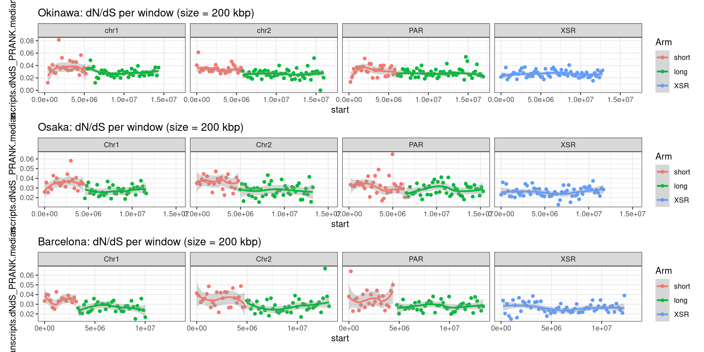
plots$Oki$transcripts$lengths / plots$Osa$transcripts$lengths / plots$Bar$transcripts$lengthsOperons
In this section we add operon data to the chrw object. Since the windows are the same for every genome, this is simple accomplished with a cbind operation to the windowed object’s mcols.
# Get operons for each species
operons <- SimpleList()
operons$Oki <- OikScrambling:::calcOperons(annots$Oki |> genes(), window = 500)
operons$Osa <- OikScrambling:::calcOperons(annots$Osa |> genes(), window = 500)
operons$Bar <- OikScrambling:::calcOperons(annots$Bar |> genes(), window = 500)
# Since the coordinates of the windows are the same, you can simply cbind more metadata columns to the data frame.
mcols(chrw$Oki) <- cbind(mcols(chrw$Oki), mcols(grWindows(genome=genomes$Oki, meta=operons$Oki, windowSize=windowSize, meta_prefix = 'operons.'))) |> suppressWarnings()
mcols(chrw$Osa) <- cbind(mcols(chrw$Osa), mcols(grWindows(genome=genomes$Osa, meta=operons$Osa, windowSize=windowSize, meta_prefix = 'operons.'))) |> suppressWarnings()
mcols(chrw$Bar) <- cbind(mcols(chrw$Bar), mcols(grWindows(genome=genomes$Bar, meta=operons$Bar, windowSize=windowSize, meta_prefix = 'operons.')))Operon-related chromosome plots, windows: Okinawa
plots$Oki$operons$density <- chrw$Oki |> per_chrom_plot() + aes(y=operons.n.count) + ggtitle(paste("Okinawa: operons per window (size = ", windowSize/1000, " kbp)", sep=""))
plots$Oki$operons$length <- chrw$Oki |> per_chrom_plot() + aes(y=operons.n.mean) + ggtitle(paste("Okinawa: mean operon size per window (size = ", windowSize/1000, " kbp)", sep=""))Operon-related chromosome plots, windows: Osaka
plots$Osa$operons$density <- chrw$Osa |> per_chrom_plot() + aes(y=operons.n.count) + ggtitle(paste("Osaka: operons per window (size = ", windowSize/1000, " kbp)", sep=""))
plots$Osa$operons$length <- chrw$Osa |> per_chrom_plot() + aes(y=operons.n.mean) + ggtitle(paste("Osaka: mean operon size per window (size = ", windowSize/1000, " kbp)", sep=""))Operon-related chromosome plots, windows: Barcelona
plots$Bar$operons$density <- chrw$Bar |> per_chrom_plot() + aes(y=operons.n.count) + ggtitle(paste("Barcelona: operons per window (size = ", windowSize/1000, " kbp)", sep=""))
plots$Bar$operons$length <- chrw$Bar |> per_chrom_plot() + aes(y=operons.n.mean) + ggtitle(paste("Barcelona: mean operon size per window (size = ", windowSize/1000, " kbp)", sep=""))
Repeats
Like operons, it is simple to add repeat density, since the X coordinates (start and end positions of a GRanges are shared).
mcols(chrw$Oki) <- cbind(mcols(chrw$Oki), mcols(grWindows(genome=genomes$Oki, meta=reps$Oki, windowSize=windowSize, meta_prefix = 'repeats.')))
mcols(chrw$Osa) <- cbind(mcols(chrw$Osa), mcols(grWindows(genome=genomes$Osa, meta=reps$Osa, windowSize=windowSize, meta_prefix = 'repeats.')))
mcols(chrw$Bar) <- cbind(mcols(chrw$Bar), mcols(grWindows(genome=genomes$Bar, meta=reps$Bar, windowSize=windowSize, meta_prefix = 'repeats.')))
plots$Oki$repeats$density <- chrw$Oki |> per_chrom_plot(Y=TRUE) + aes(y=repeats.Class.count.total) + ggtitle(paste("Okinawa: repeats per window (size = ", windowSize/1000, " kbp)", sep=""))
plots$Osa$repeats$density <- chrw$Osa |> per_chrom_plot(Y=TRUE) + aes(y=repeats.Class.count.total) + ggtitle(paste("Osaka: repeats per window (size = ", windowSize/1000, " kbp)", sep=""))
plots$Bar$repeats$density <- chrw$Bar |> per_chrom_plot(Y=TRUE) + aes(y=repeats.Class.count.total) + ggtitle(paste("Barcelona: repeats per window (size = ", windowSize/1000, " kbp)", sep=""))
GenomicBreaks objects: Scores and widths
In the next sections, we explore the distribution of alignment parameters (scores and widths) for different populations vs. chromosomal position.
# Okinawa
chrw$Oki$Oki_Osa.score.mean <- binApply(mean, na.rm = T, bins_Oki, score(gbs$Oki_Osa), matchToOneBin(gbs$Oki_Osa, bins_Oki))
chrw$Oki$Oki_Aom.score.mean <- binApply(mean, na.rm = T, bins_Oki, score(gbs$Oki_Aom), matchToOneBin(gbs$Oki_Aom, bins_Oki))
chrw$Oki$Oki_Bar.score.mean <- binApply(mean, na.rm = T, bins_Oki, score(gbs$Oki_Bar), matchToOneBin(gbs$Oki_Bar, bins_Oki))
chrw$Oki$Oki_Nor.score.mean <- binApply(mean, na.rm = T, bins_Oki, score(gbs$Oki_Nor), matchToOneBin(gbs$Oki_Nor, bins_Oki))
# Osaka
chrw$Osa$Osa_Oki.score.mean <- binApply(mean, na.rm = T, bins_Osa, score(gbs$Osa_Oki), matchToOneBin(gbs$Osa_Oki, bins_Osa))
chrw$Osa$Osa_Kum.score.mean <- binApply(mean, na.rm = T, bins_Osa, score(gbs$Osa_Kum), matchToOneBin(gbs$Osa_Kum, bins_Osa))
chrw$Osa$Osa_Bar.score.mean <- binApply(mean, na.rm = T, bins_Osa, score(gbs$Osa_Bar), matchToOneBin(gbs$Osa_Bar, bins_Osa))
chrw$Osa$Osa_Nor.score.mean <- binApply(mean, na.rm = T, bins_Osa, score(gbs$Osa_Nor), matchToOneBin(gbs$Osa_Nor, bins_Osa))
# Barcelona
chrw$Bar$Bar_Osa.score.mean <- binApply(mean, na.rm = T, bins_Bar, score(gbs$Bar_Osa), matchToOneBin(gbs$Bar_Osa, bins_Bar))
chrw$Bar$Bar_Aom.score.mean <- binApply(mean, na.rm = T, bins_Bar, score(gbs$Bar_Aom), matchToOneBin(gbs$Bar_Aom, bins_Bar))
chrw$Bar$Bar_Oki.score.mean <- binApply(mean, na.rm = T, bins_Bar, score(gbs$Bar_Oki), matchToOneBin(gbs$Bar_Oki, bins_Bar))
chrw$Bar$Bar_Kum.score.mean <- binApply(mean, na.rm = T, bins_Bar, score(gbs$Bar_Kum), matchToOneBin(gbs$Bar_Kum, bins_Bar))Score-related chromosome plots, windows: Joined plots
plots$Oki$scores$oki_osa <- chrw$Oki |> per_chrom_plot(Y=TRUE) + aes(y=Oki_Osa.score.mean) + ggtitle("Oki-Osa: Chromosomal position vs. alignment score")
plots$Oki$scores$oki_bar <- chrw$Oki |> per_chrom_plot(Y=TRUE) + aes(y=Oki_Bar.score.mean) + ggtitle("Oki-Bar: Chromosomal position vs. alignment score")
plots$Oki$scores$combined <- chrw$Oki |>
as.data.frame() |>
subset(select=c("seqnames", "start", "end", "Oki_Osa.score.mean", "Oki_Aom.score.mean", "Oki_Bar.score.mean", "Oki_Nor.score.mean" )) |>
plyranges::filter(seqnames %in% c('chr1', 'chr2', 'PAR', 'XSR')) |>
tidyr::pivot_longer(c("Oki_Osa.score.mean", "Oki_Aom.score.mean", "Oki_Bar.score.mean", "Oki_Nor.score.mean")) |>
ggplot() +
aes(start, value, col = name) +
facet_wrap(~seqnames, nrow = 1) +
geom_smooth(span = 0.25, se = FALSE) +
ggtitle("Okinawa: Chromosomal position vs. alignment score")
plots$Osa$scores$combined <- chrw$Osa |>
as.data.frame() |>
subset(select=c("seqnames", "start", "end", "Osa_Oki.score.mean", "Osa_Kum.score.mean", "Osa_Bar.score.mean", "Osa_Nor.score.mean" )) |>
plyranges::filter(seqnames %in% c('Chr1', 'Chr2', 'PAR', 'XSR')) |>
tidyr::pivot_longer(c("Osa_Oki.score.mean", "Osa_Kum.score.mean", "Osa_Bar.score.mean", "Osa_Nor.score.mean")) |>
ggplot() +
aes(start, value, col = name) +
facet_wrap(~seqnames, nrow = 1) +
geom_smooth(span = 0.25, se = FALSE) +
ggtitle("Osaka: Chromosomal position vs. alignment score")
plots$Bar$scores$combined <- chrw$Bar |>
as.data.frame() |>
subset(select=c("seqnames", "start", "end", "Bar_Oki.score.mean", "Bar_Kum.score.mean", "Bar_Osa.score.mean", "Bar_Aom.score.mean" )) |>
plyranges::filter(seqnames %in% c('Chr1', 'Chr2', 'PAR', 'XSR')) |>
tidyr::pivot_longer(c("Bar_Oki.score.mean", "Bar_Kum.score.mean", "Bar_Osa.score.mean", "Bar_Aom.score.mean")) |>
ggplot() +
aes(start, value, col = name) +
facet_wrap(~seqnames, nrow = 1) +
geom_smooth(span = 0.25, se = FALSE) +
ggtitle("Barcelona: Chromosomal position vs. alignment score")
(plots$Oki$scores$combined / plots$Osa$scores$combined / plots$Bar$scores$combined)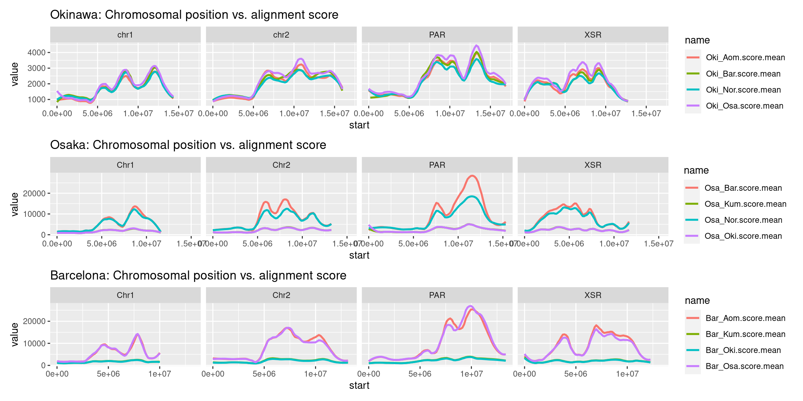
See also the scaled scores in the Extra section.
Width-related chromosome plots
# Okinawa
chrw$Oki$Oki_Osa.width.mean <- binApply(mean, na.rm = T, bins_Oki, width(gbs$Oki_Osa), matchToOneBin(gbs$Oki_Osa, bins_Oki))
chrw$Oki$Oki_Aom.width.mean <- binApply(mean, na.rm = T, bins_Oki, width(gbs$Oki_Aom), matchToOneBin(gbs$Oki_Aom, bins_Oki))
chrw$Oki$Oki_Bar.width.mean <- binApply(mean, na.rm = T, bins_Oki, width(gbs$Oki_Bar), matchToOneBin(gbs$Oki_Bar, bins_Oki))
chrw$Oki$Oki_Nor.width.mean <- binApply(mean, na.rm = T, bins_Oki, width(gbs$Oki_Nor), matchToOneBin(gbs$Oki_Nor, bins_Oki))
# Osaka
chrw$Osa$Osa_Oki.width.mean <- binApply(mean, na.rm = T, bins_Osa, width(gbs$Osa_Oki), matchToOneBin(gbs$Osa_Oki, bins_Osa))
chrw$Osa$Osa_Kum.width.mean <- binApply(mean, na.rm = T, bins_Osa, width(gbs$Osa_Kum), matchToOneBin(gbs$Osa_Kum, bins_Osa))
chrw$Osa$Osa_Bar.width.mean <- binApply(mean, na.rm = T, bins_Osa, width(gbs$Osa_Bar), matchToOneBin(gbs$Osa_Bar, bins_Osa))
chrw$Osa$Osa_Nor.width.mean <- binApply(mean, na.rm = T, bins_Osa, width(gbs$Osa_Nor), matchToOneBin(gbs$Osa_Nor, bins_Osa))
# Barcelona
chrw$Bar$Bar_Osa.width.mean <- binApply(mean, na.rm = T, bins_Bar, width(gbs$Bar_Osa), matchToOneBin(gbs$Bar_Osa, bins_Bar))
chrw$Bar$Bar_Aom.width.mean <- binApply(mean, na.rm = T, bins_Bar, width(gbs$Bar_Aom), matchToOneBin(gbs$Bar_Aom, bins_Bar))
chrw$Bar$Bar_Oki.width.mean <- binApply(mean, na.rm = T, bins_Bar, width(gbs$Bar_Oki), matchToOneBin(gbs$Bar_Oki, bins_Bar))
chrw$Bar$Bar_Kum.width.mean <- binApply(mean, na.rm = T, bins_Bar, width(gbs$Bar_Kum), matchToOneBin(gbs$Bar_Kum, bins_Bar))Width-related chromosome plots, windows: Okinawa
plots$Oki$widths$widths <- chrw$Oki |> per_chrom_plot(Y=TRUE) + aes(y=Oki_Osa.width.mean) +
scale_y_log10() + ggtitle("Oki-Osa: Chromosomal position vs. aligned segment width")
plots$Oki$widths$combined <- chrw$Oki |>
as.data.frame() |>
subset(select=c("seqnames", "start", "end", "Oki_Osa.width.mean", "Oki_Aom.width.mean", "Oki_Bar.width.mean", "Oki_Nor.width.mean" )) |>
plyranges::filter(seqnames %in% c('chr1', 'chr2', 'PAR', 'XSR')) |>
tidyr::pivot_longer(c("Oki_Osa.width.mean", "Oki_Aom.width.mean", "Oki_Bar.width.mean", "Oki_Nor.width.mean")) |>
ggplot() +
aes(start, value, col = name) +
facet_wrap(~seqnames, nrow = 1) +
geom_smooth(method='loess', formula = y ~ x, span = 0.25, se = FALSE) +
ggtitle("Okinawa: Chromosomal position vs. aligned segment width")
plots$Osa$widths$widths <- chrw$Osa |> per_chrom_plot(Y=TRUE) + aes(y=Osa_Bar.width.mean) +
scale_y_log10() + ggtitle("Osa-Bar: Chromosomal position vs. aligned segment width")
plots$Osa$widths$combined <- chrw$Osa |>
as.data.frame() |>
subset(select=c("seqnames", "start", "end", "Osa_Oki.width.mean", "Osa_Kum.width.mean", "Osa_Bar.width.mean", "Osa_Nor.width.mean" )) |>
plyranges::filter(seqnames %in% c('Chr1', 'Chr2', 'PAR', 'XSR')) |>
tidyr::pivot_longer(c("Osa_Oki.width.mean", "Osa_Kum.width.mean", "Osa_Bar.width.mean", "Osa_Nor.width.mean")) |>
ggplot() +
aes(start, value, col = name) +
facet_wrap(~seqnames, nrow = 1) +
geom_smooth(method='loess', formula = y ~ x, span = 0.25, se = FALSE) +
ggtitle("Osaka: Chromosomal position vs. aligned segment width")
plots$Bar$widths$widths <- chrw$Bar |> per_chrom_plot(Y=TRUE) + aes(y=Bar_Aom.width.mean) +
scale_y_log10() + ggtitle("Bar-Aom: Chromosomal position vs. aligned segment width")
plots$Bar$widths$combined <- chrw$Bar |>
as.data.frame() |>
subset(select=c("seqnames", "start", "end", "Bar_Oki.width.mean", "Bar_Kum.width.mean", "Bar_Osa.width.mean", "Bar_Aom.width.mean" )) |>
plyranges::filter(seqnames %in% c('Chr1', 'Chr2', 'PAR', 'XSR')) |>
tidyr::pivot_longer(c("Bar_Oki.width.mean", "Bar_Kum.width.mean", "Bar_Osa.width.mean", "Bar_Aom.width.mean")) |>
ggplot() +
aes(start, value, col = name) +
facet_wrap(~seqnames, nrow = 1) +
geom_smooth(method='loess', formula = y ~ x, span = 0.25, se = FALSE) +
ggtitle("Barcelona: Chromosomal position vs. aligned segment width")
Breakpoints
# get_bps returns a GRanges, but we need mcols to use grWindows.
# Add some mcols to the output of get_bps.
get_bps_mcol <- function(gr) {
gr <- get_bps(gr)
gr$breaks <- "break"
gr
}Breakpoint-related chromosome plots, windows: Okinawa
mcols(chrw$Oki) <- cbind(mcols(chrw$Oki), mcols(grWindows(genome=genomes$Oki, meta=get_bps_mcol(gbs$Oki_Osa), windowSize=windowSize, meta_prefix = 'bp.Oki_Osa.')))
mcols(chrw$Oki) <- cbind(mcols(chrw$Oki), mcols(grWindows(genome=genomes$Oki, meta=get_bps_mcol(gbs$Oki_Bar), windowSize=windowSize, meta_prefix = 'bp.Oki_Bar.')))
mcols(chrw$Oki) <- cbind(mcols(chrw$Oki), mcols(grWindows(genome=genomes$Oki, meta=get_bps_mcol(gbs$Oki_Kum), windowSize=windowSize, meta_prefix = 'bp.Oki_Kum.')))
mcols(chrw$Oki) <- cbind(mcols(chrw$Oki), mcols(grWindows(genome=genomes$Oki, meta=get_bps_mcol(gbs$Oki_Aom), windowSize=windowSize, meta_prefix = 'bp.Oki_Aom.')))
mcols(chrw$Oki) <- cbind(mcols(chrw$Oki), mcols(grWindows(genome=genomes$Oki, meta=get_bps_mcol(gbs$Oki_Nor), windowSize=windowSize, meta_prefix = 'bp.Oki_Nor.')))
# And a mean count
chrw$Oki$bp.mean.breaks <- chrw$Oki |> as.data.frame()|> select("bp.Oki_Osa.breaks.count", "bp.Oki_Bar.breaks.count", "bp.Oki_Kum.breaks.count", "bp.Oki_Aom.breaks.count", "bp.Oki_Nor.breaks.count") |> as.data.frame() |> rowMeans()
p1_ysr <- chrw$Oki |>
as.data.frame() |>
subset(select=c("seqnames", "start", "end", "bp.Oki_Osa.breaks.count", "bp.Oki_Bar.breaks.count", "bp.Oki_Kum.breaks.count", "bp.Oki_Aom.breaks.count", "bp.Oki_Nor.breaks.count" )) |>
plyranges::filter(seqnames %in% c('chr1', 'chr2', 'PAR', 'XSR', 'YSR')) |>
tidyr::pivot_longer(c("bp.Oki_Osa.breaks.count", "bp.Oki_Bar.breaks.count", "bp.Oki_Kum.breaks.count", "bp.Oki_Aom.breaks.count", "bp.Oki_Nor.breaks.count" )) |>
ggplot() +
aes(start, value, col = name) +
facet_wrap(~seqnames, nrow = 1) +
geom_smooth(method='loess', formula = y ~ x, span = 0.25, se = FALSE) +
ggtitle("Okinawa: Chromosomal position vs. number of breakpoints")
p1_noysr <- chrw$Oki |>
as.data.frame() |>
subset(select=c("seqnames", "start", "end", "bp.Oki_Osa.breaks.count", "bp.Oki_Bar.breaks.count", "bp.Oki_Kum.breaks.count", "bp.Oki_Aom.breaks.count", "bp.Oki_Nor.breaks.count" )) |>
plyranges::filter(seqnames %in% c('chr1', 'chr2', 'PAR', 'XSR')) |>
tidyr::pivot_longer(c("bp.Oki_Osa.breaks.count", "bp.Oki_Bar.breaks.count", "bp.Oki_Kum.breaks.count", "bp.Oki_Aom.breaks.count", "bp.Oki_Nor.breaks.count" )) |>
ggplot() +
aes(start, value, col = name) +
facet_wrap(~seqnames, nrow = 1) +
geom_smooth(method='loess', formula = y ~ x, span = 0.25, se = FALSE) +
ggtitle("Okinawa: Chromosomal position vs. number of breakpoints")Breakpoint-related chromosome plots, windows: Osaka
mcols(chrw$Osa) <- cbind(mcols(chrw$Osa), mcols(grWindows(genome=genomes$Osa, meta=get_bps_mcol(gbs$Osa_Oki), windowSize=windowSize, meta_prefix = 'bp.Osa_Oki.')))
mcols(chrw$Osa) <- cbind(mcols(chrw$Osa), mcols(grWindows(genome=genomes$Osa, meta=get_bps_mcol(gbs$Osa_Bar), windowSize=windowSize, meta_prefix = 'bp.Osa_Bar.')))
mcols(chrw$Osa) <- cbind(mcols(chrw$Osa), mcols(grWindows(genome=genomes$Osa, meta=get_bps_mcol(gbs$Osa_Kum), windowSize=windowSize, meta_prefix = 'bp.Osa_Kum.')))
mcols(chrw$Osa) <- cbind(mcols(chrw$Osa), mcols(grWindows(genome=genomes$Osa, meta=get_bps_mcol(gbs$Osa_Aom), windowSize=windowSize, meta_prefix = 'bp.Osa_Aom.')))
mcols(chrw$Osa) <- cbind(mcols(chrw$Osa), mcols(grWindows(genome=genomes$Osa, meta=get_bps_mcol(gbs$Osa_Nor), windowSize=windowSize, meta_prefix = 'bp.Osa_Nor.')))
chrw$Osa$bp.mean.breaks <- chrw$Osa |> as.data.frame() |> select("bp.Osa_Oki.breaks.count", "bp.Osa_Bar.breaks.count", "bp.Osa_Kum.breaks.count", "bp.Osa_Aom.breaks.count", "bp.Osa_Nor.breaks.count") |> as.data.frame() |> rowMeans()
p2_ysr <- chrw$Osa |>
as.data.frame() |>
subset(select=c("seqnames", "start", "end", "bp.Osa_Oki.breaks.count", "bp.Osa_Bar.breaks.count", "bp.Osa_Kum.breaks.count", "bp.Osa_Aom.breaks.count", "bp.Osa_Nor.breaks.count" )) |>
plyranges::filter(seqnames %in% c('Chr1', 'Chr2', 'PAR', 'XSR', 'YSR')) |>
tidyr::pivot_longer(c("bp.Osa_Oki.breaks.count", "bp.Osa_Bar.breaks.count", "bp.Osa_Kum.breaks.count", "bp.Osa_Aom.breaks.count", "bp.Osa_Nor.breaks.count" )) |>
ggplot() +
aes(start, value, col = name) +
facet_wrap(~seqnames, nrow = 1) +
geom_smooth(method='loess', formula = y ~ x, span = 0.25, se = FALSE) +
ggtitle("Osaka: Chromosomal position vs. number of breakpoints")
p2_noysr <- chrw$Osa |>
as.data.frame() |>
subset(select=c("seqnames", "start", "end", "bp.Osa_Oki.breaks.count", "bp.Osa_Bar.breaks.count", "bp.Osa_Kum.breaks.count", "bp.Osa_Aom.breaks.count", "bp.Osa_Nor.breaks.count" )) |>
plyranges::filter(seqnames %in% c('Chr1', 'Chr2', 'PAR', 'XSR')) |>
tidyr::pivot_longer(c("bp.Osa_Oki.breaks.count", "bp.Osa_Bar.breaks.count", "bp.Osa_Kum.breaks.count", "bp.Osa_Aom.breaks.count", "bp.Osa_Nor.breaks.count" )) |>
ggplot() +
aes(start, value, col = name) +
facet_wrap(~seqnames, nrow = 1) +
geom_smooth(method='loess', formula = y ~ x, span = 0.25, se = FALSE) +
ggtitle("Osaka: Chromosomal position vs. number of breakpoints")Breakpoint-related chromosome plots, windows: Barcelona
mcols(chrw$Bar) <- cbind(mcols(chrw$Bar), mcols(grWindows(genome=genomes$Bar, meta=get_bps_mcol(gbs$Bar_Oki), windowSize=windowSize, meta_prefix = 'bp.Bar_Oki.')))
mcols(chrw$Bar) <- cbind(mcols(chrw$Bar), mcols(grWindows(genome=genomes$Bar, meta=get_bps_mcol(gbs$Bar_Osa), windowSize=windowSize, meta_prefix = 'bp.Bar_Osa.')))
mcols(chrw$Bar) <- cbind(mcols(chrw$Bar), mcols(grWindows(genome=genomes$Bar, meta=get_bps_mcol(gbs$Bar_Kum), windowSize=windowSize, meta_prefix = 'bp.Bar_Kum.')))
mcols(chrw$Bar) <- cbind(mcols(chrw$Bar), mcols(grWindows(genome=genomes$Bar, meta=get_bps_mcol(gbs$Bar_Aom), windowSize=windowSize, meta_prefix = 'bp.Bar_Aom.')))
mcols(chrw$Bar) <- cbind(mcols(chrw$Bar), mcols(grWindows(genome=genomes$Bar, meta=get_bps_mcol(gbs$Bar_Nor), windowSize=windowSize, meta_prefix = 'bp.Bar_Nor.')))
p3_ysr <- chrw$Bar |>
as.data.frame() |>
subset(select=c("seqnames", "start", "end", "bp.Bar_Oki.breaks.count", "bp.Bar_Osa.breaks.count", "bp.Bar_Kum.breaks.count", "bp.Bar_Aom.breaks.count", "bp.Bar_Nor.breaks.count" )) |>
plyranges::filter(seqnames %in% c('Chr1', 'Chr2', 'PAR', 'XSR', 'YSR')) |>
tidyr::pivot_longer(c("bp.Bar_Oki.breaks.count", "bp.Bar_Osa.breaks.count", "bp.Bar_Kum.breaks.count", "bp.Bar_Aom.breaks.count", "bp.Bar_Nor.breaks.count" )) |>
ggplot() +
aes(start, value, col = name) +
facet_wrap(~seqnames, nrow = 1) +
geom_smooth(method='loess', formula = y ~ x, span = 0.25, se = FALSE) +
ggtitle("Barcelona: Chromosomal position vs. number of breakpoints")
p3_noysr <- chrw$Bar |>
as.data.frame() |>
subset(select=c("seqnames", "start", "end", "bp.Bar_Oki.breaks.count", "bp.Bar_Osa.breaks.count", "bp.Bar_Kum.breaks.count", "bp.Bar_Aom.breaks.count", "bp.Bar_Nor.breaks.count" )) |>
plyranges::filter(seqnames %in% c('Chr1', 'Chr2', 'PAR', 'XSR')) |>
tidyr::pivot_longer(c("bp.Bar_Oki.breaks.count", "bp.Bar_Osa.breaks.count", "bp.Bar_Kum.breaks.count", "bp.Bar_Aom.breaks.count", "bp.Bar_Nor.breaks.count" )) |>
ggplot() +
aes(start, value, col = name) +
facet_wrap(~seqnames, nrow = 1) +
geom_smooth(method='loess', formula = y ~ x, span = 0.25, se = FALSE) +
ggtitle("Barcelona: Chromosomal position vs. number of breakpoints")Breakpoint-related chromosome plots, windows: Joined plots
(p1_ysr / p2_ysr / p3_ysr )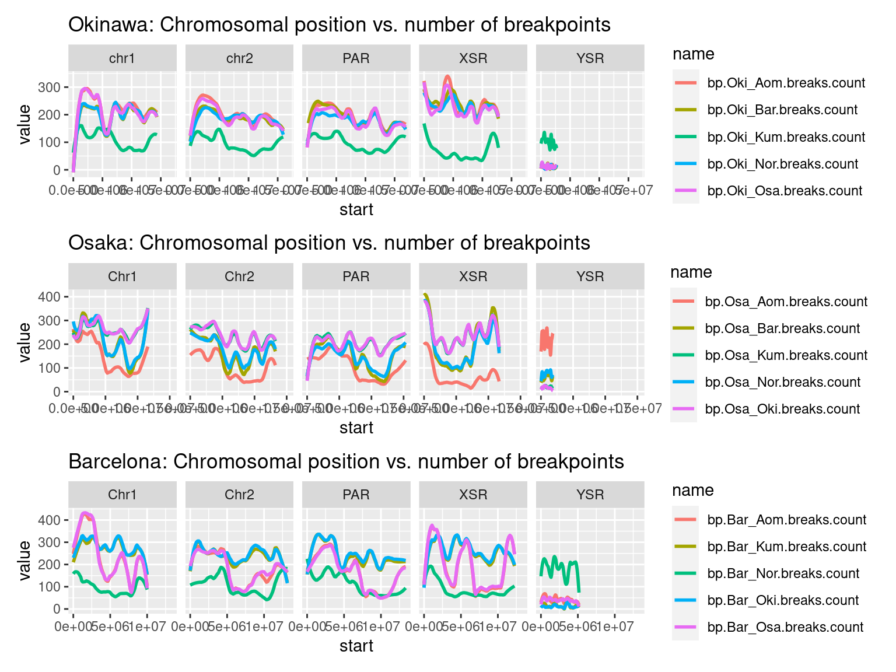
#(p1_noysr / p2_noysr / p3_noysr )Joining windowed plots
Note that there are two Y axes for these plots. Repeat and gene density are shown on the same Y axis (left), while dN/dS is shown on the second Y axis (right).
tmp <- chrw$Oki |> as.data.frame() |> plyranges::filter(seqnames %in% c("chr1", "chr2", "PAR", "XSR"))
tmp$bp.mean.breaks <- tmp |> select("bp.Oki_Osa.breaks.count", "bp.Oki_Bar.breaks.count", "bp.Oki_Kum.breaks.count", "bp.Oki_Aom.breaks.count", "bp.Oki_Nor.breaks.count") |> as.data.frame() |> rowMeans()
scaleFactor <- max(tmp$bp.mean.breaks,na.rm=T)/max(tmp$transcripts.dNdS_PRANK.median, na.rm=T)
p1 <- ggplot(tmp, aes(x=start)) +
geom_smooth(method='loess', formula = y ~ x, aes(y=bp.mean.breaks, color="genes")) +
geom_smooth(method='loess', formula = y ~ x, aes(y=transcripts.dNdS_PRANK.median*scaleFactor, color="dN/dS")) +
geom_smooth(method='loess', formula = y ~ x, aes(y=repeats.Class.count.total, color="repeats")) +
scale_y_continuous(name="breakpoints/repeats per window", sec.axis=sec_axis(~./scaleFactor, name="median dN/dS per window")) +
ggtitle("Okinawa: Breakpoints, genes, and dN/dS per window") +
facet_wrap(~seqnames, nrow=1)
# And a correlation plot
p1_c <- ggplot(tmp) + aes(x=bp.mean.breaks, y=transcripts.dNdS_GUIDANCE2.median) + geom_point() + geom_smooth(method='lm', col='red') + ggpubr::stat_cor() + facet_wrap(seqnames~Arm, ncol=2, scales = 'free') + ggtitle('Okinawa: Breakpoints vs. dN/dS') + ylab('dN/dS')
tmp <- chrw$Osa |> as.data.frame() |> plyranges::filter(seqnames %in% c("Chr1", "Chr2", "PAR", "XSR"))
tmp$bp.mean.breaks <- tmp |> select("bp.Osa_Oki.breaks.count", "bp.Osa_Bar.breaks.count", "bp.Osa_Kum.breaks.count", "bp.Osa_Aom.breaks.count", "bp.Osa_Nor.breaks.count") |> as.data.frame() |> rowMeans()
scaleFactor <- max(tmp$bp.mean.breaks,na.rm=T)/max(tmp$transcripts.dNdS_PRANK.median, na.rm=T)
p2 <- ggplot(tmp, aes(x=start)) +
geom_smooth(method='loess', formula = y ~ x, aes(y=bp.mean.breaks, color="genes")) +
geom_smooth(method='loess', formula = y ~ x, aes(y=transcripts.dNdS_PRANK.median*scaleFactor, color="dN/dS")) +
geom_smooth(method='loess', formula = y ~ x, aes(y=repeats.Class.count.total, color="repeats")) +
scale_y_continuous(name="breakpoints/repeats per window", sec.axis=sec_axis(~./scaleFactor, name="median dN/dS per window")) +
ggtitle("Osaka: Breakpoints, genes, and dN/dS per window") +
facet_wrap(~seqnames, nrow=1)
p2_c <- ggplot(tmp) + aes(x=bp.mean.breaks, y=transcripts.dNdS_GUIDANCE2.median) + geom_point() + geom_smooth(method='lm', col='red') + ggpubr::stat_cor() + facet_wrap(seqnames~Arm, ncol=2, scales = 'free') + ggtitle('Osaka: Breakpoints vs. dN/dS') + ylab('dN/dS')
tmp <- chrw$Bar |> as.data.frame() |> plyranges::filter(seqnames %in% c("Chr1", "Chr2", "PAR", "XSR"))
tmp$bp.mean.breaks <- tmp |> select("bp.Bar_Oki.breaks.count", "bp.Bar_Osa.breaks.count", "bp.Bar_Kum.breaks.count", "bp.Bar_Aom.breaks.count", "bp.Bar_Nor.breaks.count") |> as.data.frame() |> rowMeans()
scaleFactor <- max(tmp$bp.mean.breaks,na.rm=T)/max(tmp$transcripts.dNdS_PRANK.median, na.rm=T)
p3 <- ggplot(tmp, aes(x=start)) +
geom_smooth(method='loess', formula = y ~ x,aes(y=bp.mean.breaks, color="genes")) +
geom_smooth(method='loess', formula = y ~ x,aes(y=transcripts.dNdS_PRANK.median*scaleFactor, color="dN/dS")) +
geom_smooth(method='loess', formula = y ~ x,aes(y=repeats.Class.count.total, color="repeats")) +
scale_y_continuous(name="breakpoints/repeats per window", sec.axis=sec_axis(~./scaleFactor, name="median dN/dS per window")) +
ggtitle("Barcelona: Breakpoints, genes, and dN/dS per window") +
facet_wrap(~seqnames, nrow=1)
p3_c <- ggplot(tmp) + aes(x=bp.mean.breaks, y=transcripts.dNdS_GUIDANCE2.median) + geom_point() + geom_smooth(method='lm', col='red') + ggpubr::stat_cor() + facet_wrap(seqnames~Arm, ncol=2, scales = 'free') + ggtitle('Barcelona: Breakpoints vs. dN/dS') + ylab('dN/dS')
( p1 / p2 / p3 )
(p1_c + p2_c + p3_c )Statistics
Transcript widths.
library(ggpubr)
append_width <- function(gr) {
gr$w <- width(gr)
gr
}
# All transcript widths - no binning, no windows, etc.
# Okinawa
tb <- transcripts$Oki |> plyranges::filter(seqnames %in% c('chr1', 'chr2', 'PAR', 'XSR', 'YSR')) |> flagLongShort(longShort$OKI2018.I69) |> append_width() |> as.data.frame()
tb$seqnames_arm <- paste0(tb$seqnames, "_", tb$Arm)
# Transcript length
p1 <- ggboxplot(tb, x='seqnames_arm', y='w', color='seqnames', add='jitter') + theme(axis.text.x=element_text(angle=90)) + ylab('transcript length') + stat_compare_means(comparison=list(c('chr1_short', 'chr1_long'), c('chr2_short', 'chr2_long'), c('PAR_short', 'PAR_long'), c('XSR_XSR', 'YSR_YSR'), c('XSR_XSR', 'PAR_short'), c('XSR_XSR', 'PAR_long'))) + ggtitle('Okinawa: Transcript lengths by chr+arm')
# Operon length
tb <- operons$Oki |> plyranges::filter(seqnames %in% c('chr1', 'chr2', 'PAR', 'XSR', 'YSR')) |> flagLongShort(longShort$OKI2018.I69) |> append_width()
tb$seqnames_arm <- paste0(seqnames(tb), "_", tb$Arm)
names(tb) <- NULL
tb <- tb |> as.data.frame()
p2 <- ggboxplot(tb, x='seqnames_arm', y='n', color='seqnames', add='jitter') + theme(axis.text.x=element_text(angle=90)) + ylab('operon length') + stat_compare_means(comparison=list(c('chr1_short', 'chr1_long'), c('chr2_short', 'chr2_long'), c('PAR_short', 'PAR_long'), c('XSR_XSR', 'YSR_YSR'), c('XSR_XSR', 'PAR_short'), c('XSR_XSR', 'PAR_long'))) + ggtitle('Okinawa: Operon lengths by chr+arm')
# Osaka
tb <- transcripts$Osa |> plyranges::filter(seqnames %in% c('Chr1', 'Chr2', 'PAR', 'XSR', 'YSR')) |> flagLongShort(longShort$OSKA2016v1.9) |> append_width() |> as.data.frame()
tb$seqnames_arm <- paste0(tb$seqnames, "_", tb$Arm)
p3 <- ggboxplot(tb, x='seqnames_arm', y='w', color='seqnames', add='jitter') + theme(axis.text.x=element_text(angle=90)) + ylab('transcript length') + stat_compare_means(comparison=list(c('Chr1_short', 'Chr1_long'), c('Chr2_short', 'Chr2_long'), c('PAR_short', 'PAR_long'), c('XSR_XSR', 'YSR_YSR'), c('XSR_XSR', 'PAR_short'), c('XSR_XSR', 'PAR_long'))) + ggtitle('Osaka: Transcript lengths by chr+arm')
# Operon length
tb <- operons$Osa |> plyranges::filter(seqnames %in% c('Chr1', 'Chr2', 'PAR', 'XSR', 'YSR')) |> flagLongShort(longShort$OSKA2016v1.9) |> append_width()
tb$seqnames_arm <- paste0(seqnames(tb), "_", tb$Arm)
names(tb) <- NULL
tb <- tb |> as.data.frame()
p4 <- ggboxplot(tb, x='seqnames_arm', y='n', color='seqnames', add='jitter') + theme(axis.text.x=element_text(angle=90)) + ylab('operon length') + stat_compare_means(comparison=list(c('Chr1_short', 'Chr1_long'), c('Chr2_short', 'Chr2_long'), c('PAR_short', 'PAR_long'), c('XSR_XSR', 'YSR_YSR'), c('XSR_XSR', 'PAR_short'), c('XSR_XSR', 'PAR_long'))) + ggtitle('Osaka: Operon lengths by chr+arm')
# Barcelona
tb <- transcripts$Bar |> plyranges::filter(seqnames %in% c('Chr1', 'Chr2', 'PAR', 'XSR', 'YSR')) |> flagLongShort(longShort$Bar2.p4) |> append_width() |> as.data.frame()
tb$seqnames_arm <- paste0(tb$seqnames, "_", tb$Arm)
p5 <- ggboxplot(tb, x='seqnames_arm', y='w', color='seqnames', add='jitter') + theme(axis.text.x=element_text(angle=90)) + ylab('transcript length') + stat_compare_means(comparison=list(c('Chr1_short', 'Chr1_long'), c('Chr2_short', 'Chr2_long'), c('PAR_short', 'PAR_long'), c('XSR_XSR', 'YSR_YSR'), c('XSR_XSR', 'PAR_short'), c('XSR_XSR', 'PAR_long'))) + ggtitle('Barcelona: Transcript lengths by chr+arm')
# Operon length
tb <- operons$Bar |> plyranges::filter(seqnames %in% c('Chr1', 'Chr2', 'PAR', 'XSR', 'YSR')) |> flagLongShort(longShort$Bar2.p4) |> append_width()
tb$seqnames_arm <- paste0(seqnames(tb), "_", tb$Arm)
names(tb) <- NULL
tb <- tb |> as.data.frame()
p6 <- ggboxplot(tb, x='seqnames_arm', y='n', color='seqnames', add='jitter') + theme(axis.text.x=element_text(angle=90)) + ylab('operon length') + stat_compare_means(comparison=list(c('Chr1_short', 'Chr1_long'), c('Chr2_short', 'Chr2_long'), c('PAR_short', 'PAR_long'), c('XSR_XSR', 'YSR_YSR'), c('XSR_XSR', 'PAR_short'), c('XSR_XSR', 'PAR_long'))) + ggtitle('Barcelona: Operon lengths by chr+arm')
p1 + p3 + p5
p2 + p4 + p6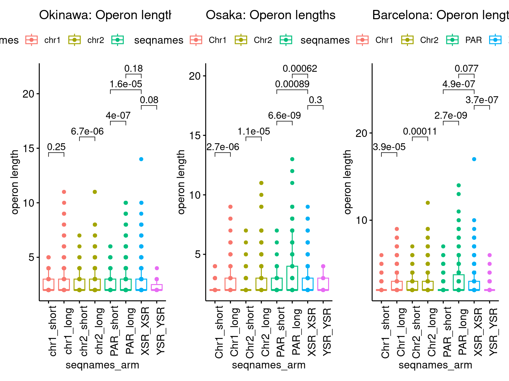
Statistics: Windows, Okinawa
library(ggpubr)
tb <- chrw$Oki |> as.data.frame() |> filter(seqnames %in% c('chr1', 'chr2', 'PAR', 'XSR', 'YSR'))
tb$seqnames_arm <- paste0(tb$seqnames, "_", tb$Arm)
plots$Oki$boxplots <- list()
plots$Oki$boxplots$operon_density <- ggboxplot(tb, x='seqnames_arm', y='operons.n.count', color='seqnames', add='jitter') +
theme(axis.text.x=element_text(angle=90)) +
ylab('operon density per window') +
stat_compare_means(comparison=list(c('chr1_short', 'chr1_long'), c('chr2_short', 'chr2_long'), c('PAR_short', 'PAR_long'), c('XSR_XSR', 'YSR_YSR'), c('XSR_XSR', 'PAR_short'), c('XSR_XSR', 'PAR_long'))) +
ggtitle('Okinawa: operon density by chr+arm')
plots$Oki$boxplots$operon_size <- ggboxplot(tb, x='seqnames_arm', y='operons.n.mean', color='seqnames', add='jitter') +
theme(axis.text.x=element_text(angle=90)) +
ylab('operon size per window') +
stat_compare_means(comparison=list(c('chr1_short', 'chr1_long'), c('chr2_short', 'chr2_long'), c('PAR_short', 'PAR_long'), c('XSR_XSR', 'YSR_YSR'), c('XSR_XSR', 'PAR_short'), c('XSR_XSR', 'PAR_long'))) +
ggtitle('Okinawa: operon size by chr+arm')
plots$Oki$boxplots$transcript_density <- ggboxplot(tb, x='seqnames_arm', y='transcripts.tx_id.count', color='seqnames', add='jitter') +
theme(axis.text.x=element_text(angle=90)) +
ylab('transcript size per window') +
stat_compare_means(comparison=list(c('chr1_short', 'chr1_long'), c('chr2_short', 'chr2_long'), c('PAR_short', 'PAR_long'), c('XSR_XSR', 'YSR_YSR'), c('XSR_XSR', 'PAR_short'), c('XSR_XSR', 'PAR_long'))) +
ggtitle('Okinawa: transcript density by chr+arm')
plots$Oki$boxplots$transcript_size <- ggboxplot(tb, x='seqnames_arm', y='transcripts.tx_len.median', color='seqnames', add='jitter') +
theme(axis.text.x=element_text(angle=90)) +
ylab('transcript size per window') +
stat_compare_means(comparison=list(c('chr1_short', 'chr1_long'), c('chr2_short', 'chr2_long'), c('PAR_short', 'PAR_long'), c('XSR_XSR', 'YSR_YSR'), c('XSR_XSR', 'PAR_short'), c('XSR_XSR', 'PAR_long'))) +
ggtitle('Okinawa: transcript size by chr+arm')
plots$Oki$boxplots$dnds <- ggboxplot(tb, x='seqnames_arm', y='transcripts.dNdS_GUIDANCE2.median', color='seqnames', add='jitter') +
theme(axis.text.x=element_text(angle=90)) +
ylab('median dN/dS per window') +
stat_compare_means(comparison=list(c('chr1_short', 'chr1_long'), c('chr2_short', 'chr2_long'), c('PAR_short', 'PAR_long'), c('XSR_XSR', 'PAR_short'), c('XSR_XSR', 'PAR_long'))) +
ggtitle('Okinawa: median dN/dS by chr+arm')Statistics: Windows, Osaka
tb <- chrw$Osa |> as.data.frame() |> filter(seqnames %in% c('Chr1', 'Chr2', 'PAR', 'XSR', 'YSR'))
tb$seqnames_arm <- paste0(tb$seqnames, "_", tb$Arm)
plots$Osa$boxplots <- list()
plots$Osa$boxplots$operon_density <- ggboxplot(tb, x='seqnames_arm', y='operons.n.count', color='seqnames', add='jitter') +
theme(axis.text.x=element_text(angle=90)) +
ylab('operon density per window') +
stat_compare_means(comparison=list(c('Chr1_short', 'Chr1_long'), c('Chr2_short', 'Chr2_long'), c('PAR_short', 'PAR_long'), c('XSR_XSR', 'YSR_YSR'), c('XSR_XSR', 'PAR_short'), c('XSR_XSR', 'PAR_long'))) +
ggtitle('Osaka: operon density by chr+arm')
plots$Osa$boxplots$operon_size <- ggboxplot(tb, x='seqnames_arm', y='operons.n.mean', color='seqnames', add='jitter') +
theme(axis.text.x=element_text(angle=90)) +
ylab('operon size per window') +
stat_compare_means(comparison=list(c('Chr1_short', 'Chr1_long'), c('Chr2_short', 'Chr2_long'), c('PAR_short', 'PAR_long'), c('XSR_XSR', 'YSR_YSR'), c('XSR_XSR', 'PAR_short'), c('XSR_XSR', 'PAR_long'))) +
ggtitle('Osaka: operon size by chr+arm')
plots$Osa$boxplots$transcript_density <- ggboxplot(tb, x='seqnames_arm', y='transcripts.tx_id.count', color='seqnames', add='jitter') +
theme(axis.text.x=element_text(angle=90)) +
ylab('transcript size per window') +
stat_compare_means(comparison=list(c('Chr1_short', 'Chr1_long'), c('Chr2_short', 'Chr2_long'), c('PAR_short', 'PAR_long'), c('XSR_XSR', 'YSR_YSR'), c('XSR_XSR', 'PAR_short'), c('XSR_XSR', 'PAR_long'))) +
ggtitle('Osaka: transcript density by chr+arm')
plots$Osa$boxplots$transcript_size <- ggboxplot(tb, x='seqnames_arm', y='transcripts.tx_len.median', color='seqnames', add='jitter') +
theme(axis.text.x=element_text(angle=90)) +
ylab('transcript size per window') +
stat_compare_means(comparison=list(c('Chr1_short', 'Chr1_long'), c('Chr2_short', 'Chr2_long'), c('PAR_short', 'PAR_long'), c('XSR_XSR', 'YSR_YSR'), c('XSR_XSR', 'PAR_short'), c('XSR_XSR', 'PAR_long'))) +
ggtitle('Osaka: transcript size by chr+arm')
plots$Osa$boxplots$dnds <- ggboxplot(tb, x='seqnames_arm', y='transcripts.dNdS_GUIDANCE2.median', color='seqnames', add='jitter') +
theme(axis.text.x=element_text(angle=90)) +
ylab('median dN/dS per window') +
stat_compare_means(comparison=list(c('Chr1_short', 'Chr1_long'), c('Chr2_short', 'Chr2_long'), c('PAR_short', 'PAR_long'), c('XSR_XSR', 'PAR_short'), c('XSR_XSR', 'PAR_long'))) +
ggtitle('Osaka: median dN/dS by chr+arm')Statistics: Windows, Barcelona
tb <- chrw$Bar |> as.data.frame() |> filter(seqnames %in% c('Chr1', 'Chr2', 'PAR', 'XSR', 'YSR'))
tb$seqnames_arm <- paste0(tb$seqnames, "_", tb$Arm)
plots$Bar$boxplots <- list()
plots$Bar$boxplots$operon_density <- ggboxplot(tb, x='seqnames_arm', y='operons.n.count', color='seqnames', add='jitter') +
theme(axis.text.x=element_text(angle=90)) +
ylab('operon density per window') +
stat_compare_means(comparison=list(c('Chr1_short', 'Chr1_long'), c('Chr2_short', 'Chr2_long'), c('PAR_short', 'PAR_long'), c('XSR_XSR', 'YSR_YSR'), c('XSR_XSR', 'PAR_short'), c('XSR_XSR', 'PAR_long'))) +
ggtitle('Barcelona: operon density by chr+arm')
plots$Bar$boxplots$operon_size <- ggboxplot(tb, x='seqnames_arm', y='operons.n.mean', color='seqnames', add='jitter') +
theme(axis.text.x=element_text(angle=90)) +
ylab('operon size per window') +
stat_compare_means(comparison=list(c('Chr1_short', 'Chr1_long'), c('Chr2_short', 'Chr2_long'), c('PAR_short', 'PAR_long'), c('XSR_XSR', 'YSR_YSR'), c('XSR_XSR', 'PAR_short'), c('XSR_XSR', 'PAR_long'))) +
ggtitle('Barcelona: operon size by chr+arm')
plots$Bar$boxplots$transcript_density <- ggboxplot(tb, x='seqnames_arm', y='transcripts.tx_id.count', color='seqnames', add='jitter') +
theme(axis.text.x=element_text(angle=90)) +
ylab('transcript size per window') +
stat_compare_means(comparison=list(c('Chr1_short', 'Chr1_long'), c('Chr2_short', 'Chr2_long'), c('PAR_short', 'PAR_long'), c('XSR_XSR', 'YSR_YSR'), c('XSR_XSR', 'PAR_short'), c('XSR_XSR', 'PAR_long'))) +
ggtitle('Barcelona: transcript density by chr+arm')
plots$Bar$boxplots$transcript_size <- ggboxplot(tb, x='seqnames_arm', y='transcripts.tx_len.median', color='seqnames', add='jitter') +
theme(axis.text.x=element_text(angle=90)) +
ylab('transcript size per window') +
stat_compare_means(comparison=list(c('Chr1_short', 'Chr1_long'), c('Chr2_short', 'Chr2_long'), c('PAR_short', 'PAR_long'), c('XSR_XSR', 'YSR_YSR'), c('XSR_XSR', 'PAR_short'), c('XSR_XSR', 'PAR_long'))) +
ggtitle('Barcelona: transcript size by chr+arm')
plots$Bar$boxplots$dnds <- ggboxplot(tb, x='seqnames_arm', y='transcripts.dNdS_GUIDANCE2.median', color='seqnames', add='jitter') +
theme(axis.text.x=element_text(angle=90)) +
ylab('median dN/dS per window') +
stat_compare_means(comparison=list(c('Chr1_short', 'Chr1_long'), c('Chr2_short', 'Chr2_long'), c('PAR_short', 'PAR_long'), c('XSR_XSR', 'YSR_YSR'), c('XSR_XSR', 'PAR_short'), c('XSR_XSR', 'PAR_long'))) +
ggtitle('Barcelona: median dN/dS by chr+arm')
detach('package:ggpubr')
(plots$Oki$boxplots$transcript_density + plots$Osa$boxplots$transcript_density + plots$Bar$boxplots$transcript_density) /
(plots$Oki$boxplots$transcript_size + plots$Osa$boxplots$transcript_size + plots$Bar$boxplots$transcript_size)
(plots$Oki$boxplots$operon_density + plots$Osa$boxplots$operon_density + plots$Bar$boxplots$operon_density) /
(plots$Oki$boxplots$operon_size + plots$Osa$boxplots$operon_size + plots$Bar$boxplots$operon_size)
plots$Oki$boxplots$dnds + plots$Osa$boxplots$dnds + plots$Bar$boxplots$dndsTransforming to a single coordinate system
In this section, I create some utility functions to scale genomic ranges to the same coordinate system, then calculate averages of some statistics over the windows in these regions.
First, create some helper functions for tile-based indexing.
genomeGRToTiles <- function(gr, n=100) {
tile(gr, n=n) |> unlist() |> unname()
}
grTiles <- function(genome, meta, n=100, meta_prefix=NULL){
genome <- BSgenomeToGR(genome) # Make GRanges from genome
genome <- genomeGRToTiles(genome, n=n) # Make a tiled GRange from chromosome GRanges
mpw <- metaPerWindow(genome, meta, meta_prefix=meta_prefix) # Make metadata column windows and intersect
mpw
}
nTiles <- 100
tiles_Oki <- genomes$Oki |> BSgenomeToGR() |> genomeGRToTiles(nTiles)
tiles_Osa <- genomes$Osa |> BSgenomeToGR() |> genomeGRToTiles(nTiles)
tiles_Bar <- genomes$Bar |> BSgenomeToGR() |> genomeGRToTiles(nTiles)
chrt <- SimpleList()
chrt$Oki <- grTiles(genome=genomes$Oki, meta=transcripts$Oki, n=nTiles, meta_prefix = 'transcripts.')
chrt$Oki <- flagLongShort(chrt$Oki, longShort$OKI2018.I69)
chrt$Osa <- grTiles(genome=genomes$Osa, meta=transcripts$Osa, n=nTiles, meta_prefix = 'transcripts.')
chrt$Osa <- flagLongShort(chrt$Osa, longShort$OSKA2016v1.9)
chrt$Bar <- grTiles(genome=genomes$Bar, meta=transcripts$Bar, n=nTiles, meta_prefix = 'transcripts.')
chrt$Bar <- flagLongShort(chrt$Bar, longShort$Bar2.p4)
# Operons
mcols(chrt$Oki) <- cbind(mcols(chrt$Oki), mcols(grTiles(genome=genomes$Oki, meta=operons$Oki, n=nTiles, meta_prefix = 'operons.'))) |> suppressWarnings()
mcols(chrt$Osa) <- cbind(mcols(chrt$Osa), mcols(grTiles(genome=genomes$Osa, meta=operons$Osa, n=nTiles, meta_prefix = 'operons.'))) |> suppressWarnings()
mcols(chrt$Bar) <- cbind(mcols(chrt$Bar), mcols(grTiles(genome=genomes$Bar, meta=operons$Bar, n=nTiles, meta_prefix = 'operons.'))) |> suppressWarnings()
# Repeats
mcols(chrt$Oki) <- cbind(mcols(chrt$Oki), mcols(grTiles(genome=genomes$Oki, meta=reps$Oki, n=nTiles, meta_prefix = 'repeats.')))
mcols(chrt$Osa) <- cbind(mcols(chrt$Osa), mcols(grTiles(genome=genomes$Osa, meta=reps$Osa, n=nTiles, meta_prefix = 'repeats.')))
mcols(chrt$Bar) <- cbind(mcols(chrt$Bar), mcols(grTiles(genome=genomes$Bar, meta=reps$Bar, n=nTiles, meta_prefix = 'repeats.')))
# Widths
chrt$Oki$Oki_Osa.width.mean <- binApply(mean, na.rm = T, tiles_Oki, width(gbs$Oki_Osa), matchToOneBin(gbs$Oki_Osa, tiles_Oki))
chrt$Oki$Oki_Aom.width.mean <- binApply(mean, na.rm = T, tiles_Oki, width(gbs$Oki_Aom), matchToOneBin(gbs$Oki_Aom, tiles_Oki))
chrt$Oki$Oki_Bar.width.mean <- binApply(mean, na.rm = T, tiles_Oki, width(gbs$Oki_Bar), matchToOneBin(gbs$Oki_Bar, tiles_Oki))
chrt$Oki$Oki_Nor.width.mean <- binApply(mean, na.rm = T, tiles_Oki, width(gbs$Oki_Nor), matchToOneBin(gbs$Oki_Nor, tiles_Oki))
chrt$Osa$Osa_Oki.width.mean <- binApply(mean, na.rm = T, tiles_Osa, width(gbs$Osa_Oki), matchToOneBin(gbs$Osa_Oki, tiles_Osa))
chrt$Osa$Osa_Kum.width.mean <- binApply(mean, na.rm = T, tiles_Osa, width(gbs$Osa_Kum), matchToOneBin(gbs$Osa_Kum, tiles_Osa))
chrt$Osa$Osa_Bar.width.mean <- binApply(mean, na.rm = T, tiles_Osa, width(gbs$Osa_Bar), matchToOneBin(gbs$Osa_Bar, tiles_Osa))
chrt$Osa$Osa_Nor.width.mean <- binApply(mean, na.rm = T, tiles_Osa, width(gbs$Osa_Nor), matchToOneBin(gbs$Osa_Nor, tiles_Osa))
chrt$Bar$Bar_Osa.width.mean <- binApply(mean, na.rm = T, bins_Bar, width(gbs$Bar_Osa), matchToOneBin(gbs$Bar_Osa, bins_Bar))
chrt$Bar$Bar_Aom.width.mean <- binApply(mean, na.rm = T, bins_Bar, width(gbs$Bar_Aom), matchToOneBin(gbs$Bar_Aom, bins_Bar))
chrt$Bar$Bar_Oki.width.mean <- binApply(mean, na.rm = T, bins_Bar, width(gbs$Bar_Oki), matchToOneBin(gbs$Bar_Oki, bins_Bar))
chrt$Bar$Bar_Kum.width.mean <- binApply(mean, na.rm = T, bins_Bar, width(gbs$Bar_Kum), matchToOneBin(gbs$Bar_Kum, bins_Bar))
# Breakpoints
mcols(chrt$Oki) <- cbind(mcols(chrt$Oki), mcols(grTiles(genome=genomes$Oki, meta=get_bps_mcol(gbs$Oki_Osa), n=nTiles, meta_prefix = 'bp.Oki_Osa.')))
mcols(chrt$Oki) <- cbind(mcols(chrt$Oki), mcols(grTiles(genome=genomes$Oki, meta=get_bps_mcol(gbs$Oki_Bar), n=nTiles, meta_prefix = 'bp.Oki_Bar.')))
mcols(chrt$Oki) <- cbind(mcols(chrt$Oki), mcols(grTiles(genome=genomes$Oki, meta=get_bps_mcol(gbs$Oki_Kum), n=nTiles, meta_prefix = 'bp.Oki_Kum.')))
mcols(chrt$Oki) <- cbind(mcols(chrt$Oki), mcols(grTiles(genome=genomes$Oki, meta=get_bps_mcol(gbs$Oki_Aom), n=nTiles, meta_prefix = 'bp.Oki_Aom.')))
mcols(chrt$Oki) <- cbind(mcols(chrt$Oki), mcols(grTiles(genome=genomes$Oki, meta=get_bps_mcol(gbs$Oki_Nor), n=nTiles, meta_prefix = 'bp.Oki_Nor.')))
chrt$Oki$bp.mean.breaks <- chrt$Oki |> as.data.frame()|> select("bp.Oki_Osa.breaks.count", "bp.Oki_Bar.breaks.count", "bp.Oki_Kum.breaks.count", "bp.Oki_Aom.breaks.count", "bp.Oki_Nor.breaks.count") |> as.data.frame() |> rowMeans()
mcols(chrt$Osa) <- cbind(mcols(chrt$Osa), mcols(grTiles(genome=genomes$Osa, meta=get_bps_mcol(gbs$Osa_Oki), n=nTiles, meta_prefix = 'bp.Osa_Oki.')))
mcols(chrt$Osa) <- cbind(mcols(chrt$Osa), mcols(grTiles(genome=genomes$Osa, meta=get_bps_mcol(gbs$Osa_Bar), n=nTiles, meta_prefix = 'bp.Osa_Bar.')))
mcols(chrt$Osa) <- cbind(mcols(chrt$Osa), mcols(grTiles(genome=genomes$Osa, meta=get_bps_mcol(gbs$Osa_Kum), n=nTiles, meta_prefix = 'bp.Osa_Kum.')))
mcols(chrt$Osa) <- cbind(mcols(chrt$Osa), mcols(grTiles(genome=genomes$Osa, meta=get_bps_mcol(gbs$Osa_Aom), n=nTiles, meta_prefix = 'bp.Osa_Aom.')))
mcols(chrt$Osa) <- cbind(mcols(chrt$Osa), mcols(grTiles(genome=genomes$Osa, meta=get_bps_mcol(gbs$Osa_Nor), n=nTiles, meta_prefix = 'bp.Osa_Nor.')))
chrt$Osa$bp.mean.breaks <- chrt$Osa |> as.data.frame()|> select("bp.Osa_Oki.breaks.count", "bp.Osa_Bar.breaks.count", "bp.Osa_Kum.breaks.count", "bp.Osa_Aom.breaks.count", "bp.Osa_Nor.breaks.count") |> as.data.frame() |> rowMeans()
mcols(chrt$Bar) <- cbind(mcols(chrt$Bar), mcols(grTiles(genome=genomes$Bar, meta=get_bps_mcol(gbs$Bar_Oki), n=nTiles, meta_prefix = 'bp.Bar_Oki.')))
mcols(chrt$Bar) <- cbind(mcols(chrt$Bar), mcols(grTiles(genome=genomes$Bar, meta=get_bps_mcol(gbs$Bar_Osa), n=nTiles, meta_prefix = 'bp.Bar_Osa.')))
mcols(chrt$Bar) <- cbind(mcols(chrt$Bar), mcols(grTiles(genome=genomes$Bar, meta=get_bps_mcol(gbs$Bar_Kum), n=nTiles, meta_prefix = 'bp.Bar_Kum.')))
mcols(chrt$Bar) <- cbind(mcols(chrt$Bar), mcols(grTiles(genome=genomes$Bar, meta=get_bps_mcol(gbs$Bar_Aom), n=nTiles, meta_prefix = 'bp.Bar_Aom.')))
mcols(chrt$Bar) <- cbind(mcols(chrt$Bar), mcols(grTiles(genome=genomes$Bar, meta=get_bps_mcol(gbs$Bar_Nor), n=nTiles, meta_prefix = 'bp.Bar_Nor.')))
chrt$Bar$bp.mean.breaks <- chrt$Bar |> as.data.frame()|> select("bp.Bar_Oki.breaks.count", "bp.Bar_Osa.breaks.count", "bp.Bar_Kum.breaks.count", "bp.Bar_Aom.breaks.count", "bp.Bar_Nor.breaks.count") |> as.data.frame() |> rowMeans()
# Alignment categories
# Okinawa
mcols(chrt$Oki) <- cbind(mcols(chrt$Oki), mcols(grTiles(genome=genomes$Oki, meta=wgo$Oki_Osa, n=nTiles, meta_prefix = 'ac.Oki_Osa.')))
mcols(chrt$Oki) <- cbind(mcols(chrt$Oki), mcols(grTiles(genome=genomes$Oki, meta=wgo$Oki_Bar, n=nTiles, meta_prefix = 'ac.Oki_Bar.')))
mcols(chrt$Oki) <- cbind(mcols(chrt$Oki), mcols(grTiles(genome=genomes$Oki, meta=wgo$Oki_Kum, n=nTiles, meta_prefix = 'ac.Oki_Kum.')))
mcols(chrt$Oki) <- cbind(mcols(chrt$Oki), mcols(grTiles(genome=genomes$Oki, meta=wgo$Oki_Aom, n=nTiles, meta_prefix = 'ac.Oki_Aom.')))
mcols(chrt$Oki) <- cbind(mcols(chrt$Oki), mcols(grTiles(genome=genomes$Oki, meta=wgo$Oki_Nor, n=nTiles, meta_prefix = 'ac.Oki_Nor.')))
chrt$Oki$ac.isolated.mean <- chrt$Oki |> as.data.frame()|> select("ac.Oki_Osa.type.isolated.alignment.count.total", "ac.Oki_Bar.type.isolated.alignment.count.total", "ac.Oki_Kum.type.isolated.alignment.count.total", "ac.Oki_Aom.type.isolated.alignment.count.total", "ac.Oki_Nor.type.isolated.alignment.count.total") |> as.data.frame() |> rowMeans()
chrt$Oki$ac.collinear.mean <- chrt$Oki |> as.data.frame()|> select("ac.Oki_Osa.type.collinear.alignment.count.total", "ac.Oki_Bar.type.collinear.alignment.count.total", "ac.Oki_Kum.type.collinear.alignment.count.total", "ac.Oki_Aom.type.collinear.alignment.count.total", "ac.Oki_Nor.type.collinear.alignment.count.total") |> as.data.frame() |> rowMeans()
chrt$Oki$ac.breakpoint.mean <- chrt$Oki |> as.data.frame()|> select("ac.Oki_Osa.type.breakpoint.region.count.total", "ac.Oki_Bar.type.breakpoint.region.count.total", "ac.Oki_Kum.type.breakpoint.region.count.total", "ac.Oki_Aom.type.breakpoint.region.count.total", "ac.Oki_Nor.type.breakpoint.region.count.total") |> as.data.frame() |> rowMeans()
chrt$Oki$ac.bridge.mean <- chrt$Oki |> as.data.frame()|> select("ac.Oki_Osa.type.bridge.region.count.total", "ac.Oki_Bar.type.bridge.region.count.total", "ac.Oki_Kum.type.bridge.region.count.total", "ac.Oki_Aom.type.bridge.region.count.total", "ac.Oki_Nor.type.bridge.region.count.total") |> as.data.frame() |> rowMeans()
mcols(chrt$Osa) <- cbind(mcols(chrt$Osa), mcols(grTiles(genome=genomes$Osa, meta=wgo$Osa_Oki, n=nTiles, meta_prefix = 'ac.Osa_Oki.')))
mcols(chrt$Osa) <- cbind(mcols(chrt$Osa), mcols(grTiles(genome=genomes$Osa, meta=wgo$Osa_Bar, n=nTiles, meta_prefix = 'ac.Osa_Bar.')))
mcols(chrt$Osa) <- cbind(mcols(chrt$Osa), mcols(grTiles(genome=genomes$Osa, meta=wgo$Osa_Kum, n=nTiles, meta_prefix = 'ac.Osa_Kum.')))
mcols(chrt$Osa) <- cbind(mcols(chrt$Osa), mcols(grTiles(genome=genomes$Osa, meta=wgo$Osa_Aom, n=nTiles, meta_prefix = 'ac.Osa_Aom.')))
mcols(chrt$Osa) <- cbind(mcols(chrt$Osa), mcols(grTiles(genome=genomes$Osa, meta=wgo$Osa_Nor, n=nTiles, meta_prefix = 'ac.Osa_Nor.')))
chrt$Osa$ac.isolated.mean <- chrt$Osa |> as.data.frame()|> select("ac.Osa_Oki.type.isolated.alignment.count.total", "ac.Osa_Bar.type.isolated.alignment.count.total", "ac.Osa_Kum.type.isolated.alignment.count.total", "ac.Osa_Aom.type.isolated.alignment.count.total", "ac.Osa_Nor.type.isolated.alignment.count.total") |> as.data.frame() |> rowMeans()
chrt$Osa$ac.collinear.mean <- chrt$Osa |> as.data.frame()|> select("ac.Osa_Oki.type.collinear.alignment.count.total", "ac.Osa_Bar.type.collinear.alignment.count.total", "ac.Osa_Kum.type.collinear.alignment.count.total", "ac.Osa_Aom.type.collinear.alignment.count.total", "ac.Osa_Nor.type.collinear.alignment.count.total") |> as.data.frame() |> rowMeans()
chrt$Osa$ac.breakpoint.mean <- chrt$Osa |> as.data.frame()|> select("ac.Osa_Oki.type.breakpoint.region.count.total", "ac.Osa_Bar.type.breakpoint.region.count.total", "ac.Osa_Kum.type.breakpoint.region.count.total", "ac.Osa_Aom.type.breakpoint.region.count.total", "ac.Osa_Nor.type.breakpoint.region.count.total") |> as.data.frame() |> rowMeans()
chrt$Osa$ac.bridge.mean <- chrt$Osa |> as.data.frame()|> select("ac.Osa_Oki.type.bridge.region.count.total", "ac.Osa_Bar.type.bridge.region.count.total", "ac.Osa_Kum.type.bridge.region.count.total", "ac.Osa_Aom.type.bridge.region.count.total", "ac.Osa_Nor.type.bridge.region.count.total") |> as.data.frame() |> rowMeans()
mcols(chrt$Bar) <- cbind(mcols(chrt$Bar), mcols(grTiles(genome=genomes$Bar, meta=wgo$Bar_Oki, n=nTiles, meta_prefix = 'ac.Bar_Oki.')))
mcols(chrt$Bar) <- cbind(mcols(chrt$Bar), mcols(grTiles(genome=genomes$Bar, meta=wgo$Bar_Osa, n=nTiles, meta_prefix = 'ac.Bar_Osa.')))
mcols(chrt$Bar) <- cbind(mcols(chrt$Bar), mcols(grTiles(genome=genomes$Bar, meta=wgo$Bar_Kum, n=nTiles, meta_prefix = 'ac.Bar_Kum.')))
mcols(chrt$Bar) <- cbind(mcols(chrt$Bar), mcols(grTiles(genome=genomes$Bar, meta=wgo$Bar_Aom, n=nTiles, meta_prefix = 'ac.Bar_Aom.')))
mcols(chrt$Bar) <- cbind(mcols(chrt$Bar), mcols(grTiles(genome=genomes$Bar, meta=wgo$Bar_Nor, n=nTiles, meta_prefix = 'ac.Bar_Nor.')))
chrt$Bar$ac.isolated.mean <- chrt$Bar |> as.data.frame()|> select("ac.Bar_Oki.type.isolated.alignment.count.total", "ac.Bar_Osa.type.isolated.alignment.count.total", "ac.Bar_Kum.type.isolated.alignment.count.total", "ac.Bar_Aom.type.isolated.alignment.count.total", "ac.Bar_Nor.type.isolated.alignment.count.total") |> as.data.frame() |> rowMeans()
chrt$Bar$ac.collinear.mean <- chrt$Bar |> as.data.frame()|> select("ac.Bar_Oki.type.collinear.alignment.count.total", "ac.Bar_Osa.type.collinear.alignment.count.total", "ac.Bar_Kum.type.collinear.alignment.count.total", "ac.Bar_Aom.type.collinear.alignment.count.total", "ac.Bar_Nor.type.collinear.alignment.count.total") |> as.data.frame() |> rowMeans()
chrt$Bar$ac.breakpoint.mean <- chrt$Bar |> as.data.frame()|> select("ac.Bar_Oki.type.breakpoint.region.count.total", "ac.Bar_Osa.type.breakpoint.region.count.total", "ac.Bar_Kum.type.breakpoint.region.count.total", "ac.Bar_Aom.type.breakpoint.region.count.total", "ac.Bar_Nor.type.breakpoint.region.count.total") |> as.data.frame() |> rowMeans()
chrt$Bar$ac.bridge.mean <- chrt$Bar |> as.data.frame()|> select("ac.Bar_Oki.type.bridge.region.count.total", "ac.Bar_Osa.type.bridge.region.count.total", "ac.Bar_Kum.type.bridge.region.count.total", "ac.Bar_Aom.type.bridge.region.count.total", "ac.Bar_Nor.type.bridge.region.count.total") |> as.data.frame() |> rowMeans()
# Now, combining it all into a single unified tiled chromosome object.
chrt_unified <- data.frame(seqnames=c(rep('Chr1', nTiles), rep('Chr2', nTiles), rep('PAR', nTiles), rep('XSR', nTiles)), start=c(seq(1, nTiles), seq(1, nTiles), seq(1, nTiles), seq(1, nTiles)), end=c(seq(1, nTiles)+1, seq(1, nTiles)+1, seq(1, nTiles)+1, seq(1, nTiles)+1) ) |> GRanges()
seqlevels(chrt_unified) <- c('Chr1', 'Chr2', 'PAR', 'XSR')
# Add a prefix to mcols to prevent collisions between colnames between similar objects.
prefix_cbind_mcols <- function(gr1, gr2, prefix) {
gr <- gr1
q_df <- mcols(gr1)
t_df <- mcols(gr2)
colnames(t_df) <- lapply(colnames(t_df), function(x) paste0(prefix, '.', x)) |> unlist()
mcols(gr) <- cbind(q_df, t_df)
gr
}
chrt_unified <- prefix_cbind_mcols(chrt_unified, chrt$Oki |> as.data.frame() |> filter(seqnames %in% c('chr1', 'chr2', 'PAR', 'XSR')) |> GRanges() , prefix='Oki')
chrt_unified <- prefix_cbind_mcols(chrt_unified, chrt$Osa |> as.data.frame() |> filter(seqnames %in% c('Chr1', 'Chr2', 'PAR', 'XSR')) |> GRanges() , prefix='Osa')
chrt_unified <- prefix_cbind_mcols(chrt_unified, chrt$Bar |> as.data.frame() |> filter(seqnames %in% c('Chr1', 'Chr2', 'PAR', 'XSR')) |> GRanges() , prefix='Bar')
# Making some mean values across all species
chrt_unified$transcripts.count.mean <- data.frame(chrt_unified$Oki.transcripts.tx_id.count, chrt_unified$Osa.transcripts.tx_id.count, chrt_unified$Bar.transcripts.tx_id.count) |> rowMeans()
chrt_unified$transcripts.length.mean <- data.frame(chrt_unified$Oki.transcripts.tx_len.mean, chrt_unified$Osa.transcripts.tx_len.mean, chrt_unified$Bar.transcripts.tx_len.mean) |> rowMeans()
chrt_unified$operons.count.mean <- data.frame(chrt_unified$Oki.operons.n.count, chrt_unified$Osa.operons.n.count, chrt_unified$Bar.operons.n.count) |> rowMeans()
chrt_unified$operons.length.mean <- data.frame(chrt_unified$Oki.operons.n.mean, chrt_unified$Osa.operons.n.mean, chrt_unified$Bar.operons.n.mean) |> rowMeans()
chrt_unified$transcripts.dNdS.mean <- data.frame(chrt_unified$Oki.transcripts.dNdS_GUIDANCE2.median, chrt_unified$Osa.transcripts.dNdS_GUIDANCE2.median, chrt_unified$Bar.transcripts.dNdS_GUIDANCE2.median) |> rowMeans()
chrt_unified$repeats.count.mean <- data.frame(chrt_unified$Oki.repeats.type.count.total, chrt_unified$Osa.repeats.type.count.total, chrt_unified$Bar.repeats.type.count.total) |> rowMeans()
chrt_unified$breakpoints.count.mean <- data.frame(chrt_unified$Oki.bp.mean.breaks, chrt_unified$Osa.bp.mean.breaks, chrt_unified$Bar.bp.mean.breaks) |> rowMeans()
chrt_unified$categories.isolated.mean <- data.frame(chrt_unified$Oki.ac.isolated.mean, chrt_unified$Osa.ac.isolated.mean, chrt_unified$Bar.ac.isolated.mean) |> rowMeans()
chrt_unified$categories.collinear.mean <- data.frame(chrt_unified$Oki.ac.collinear.mean, chrt_unified$Osa.ac.collinear.mean, chrt_unified$Bar.ac.collinear.mean) |> rowMeans()
chrt_unified$categories.breakpoint.mean <- data.frame(chrt_unified$Oki.ac.breakpoint.mean, chrt_unified$Osa.ac.breakpoint.mean, chrt_unified$Bar.ac.breakpoint.mean) |> rowMeans()
chrt_unified$categories.bridge.mean <- data.frame(chrt_unified$Oki.ac.bridge.mean, chrt_unified$Osa.ac.bridge.mean, chrt_unified$Bar.ac.bridge.mean) |> rowMeans()
# ggplot(chrt_unified |> as.data.frame()) +
# geom_smooth(aes(x=start, y=transcripts.count.mean/max(transcripts.count.mean, na.rm=T), col='transcripts'), se=FALSE) +
# geom_smooth(aes(x=start, y=repeats.count.mean/max(repeats.count.mean, na.rm = T), col='repeats'), se=FALSE) +
# geom_smooth(aes(x=start, y=transcripts.dNdS.mean/max(transcripts.dNdS.mean, na.rm = T), col='dN/dS'), se=FALSE) +
# geom_smooth(aes(x=start, y=operons.count.mean/max(operons.count.mean, na.rm = T), col='operons'), se=FALSE) +
# geom_smooth(aes(x=start, y=breakpoints.count.mean/max(breakpoints.count.mean, na.rm = T), col='breakpoints'), se=FALSE) +
# ylab('pct') +
# facet_wrap(~seqnames, nrow=1) +
# ggtitle('Tiles (averages across Oki, Osa, Bar): Properties across genome')What features correlate with breakpoints?
tb <- chrt_unified |> as.data.frame()
tb$seqnames_arm <- paste0(tb$seqnames, "_", tb$Oki.Arm)
p1 <- ggplot(tb) + aes(x=breakpoints.count.mean, y=transcripts.dNdS.mean) + geom_point() + geom_smooth(method='lm', col='red' , formula=y~x) + ggpubr::stat_cor() + facet_wrap(seqnames~Oki.Arm, nrow=1, scales = 'free') + ylab('dN/dS')
p2 <- ggplot(tb) + aes(x=breakpoints.count.mean, y=transcripts.count.mean) + geom_point() + geom_smooth(method='lm', col='red' , formula=y~x) + ggpubr::stat_cor() + facet_wrap(seqnames~Oki.Arm, nrow=1, scales = 'free') + ylab('transcripts')
p3 <- ggplot(tb) + aes(x=breakpoints.count.mean, y=operons.count.mean) + geom_point() + geom_smooth(method='lm', col='red' , formula=y~x) + ggpubr::stat_cor() + facet_wrap(seqnames~Oki.Arm, nrow=1, scales = 'free') + ylab('transcripts')
p4 <- ggplot(tb) + aes(x=breakpoints.count.mean, y=repeats.count.mean) + geom_point() + geom_smooth(method='lm', col='red' , formula=y~x) + ggpubr::stat_cor() + facet_wrap(seqnames~Oki.Arm, nrow=1, scales = 'free') + ylab('repeats')
( p1 / p2 / p3 / p4)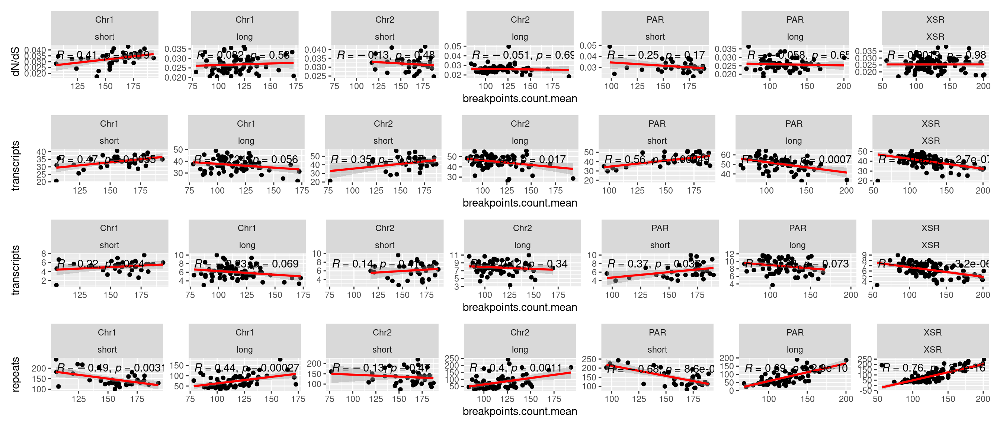
What alignment categories correlate with alignment categories?
tb <- chrt_unified |> as.data.frame()
tb$seqnames_arm <- paste0(tb$seqnames, "_", tb$Oki.Arm)
p1 <- ggplot(tb) + aes(x=breakpoints.count.mean, y=categories.isolated.mean) + geom_point() + geom_smooth(method='lm', col='red' , formula=y~x) + ggpubr::stat_cor() + facet_wrap(seqnames~Oki.Arm, nrow=1, scales = 'free') + ylab('isolated')
p2 <- ggplot(tb) + aes(x=breakpoints.count.mean, y=categories.collinear.mean) + geom_point() + geom_smooth(method='lm', col='red' , formula=y~x) + ggpubr::stat_cor() + facet_wrap(seqnames~Oki.Arm, nrow=1, scales = 'free') + ylab('collinear')
p3 <- ggplot(tb) + aes(x=breakpoints.count.mean, y=categories.breakpoint.mean) + geom_point() + geom_smooth(method='lm', col='red' , formula=y~x) + ggpubr::stat_cor() + facet_wrap(seqnames~Oki.Arm, nrow=1, scales = 'free') + ylab('breakpoint')
p4 <- ggplot(tb) + aes(x=breakpoints.count.mean, y=categories.bridge.mean) + geom_point() + geom_smooth(method='lm', col='red' , formula=y~x) + ggpubr::stat_cor() + facet_wrap(seqnames~Oki.Arm, nrow=1, scales = 'free') + ylab('bridge')
( p1 / p2 / p3 / p4)
# ggplot(chrt_unified |> as.data.frame()) +
# geom_smooth(aes(x=start, y=categories.isolated.mean, col='isolated'), se=FALSE) +
# geom_smooth(aes(x=start, y=categories.collinear.mean, col='collinear'), se=FALSE) +
# geom_smooth(aes(x=start, y=categories.breakpoint.mean, col='breakpoint'), se=FALSE) +
# geom_smooth(aes(x=start, y=categories.bridge.mean, col='bridge'), se=FALSE) +
# ylab('pct') +
# facet_wrap(~seqnames, nrow=1) +
# ggtitle('Tiles (averages across Oki, Osa, Bar): Alignment categories by location')Gene size and density vs. operon size and density.
tb <- chrt_unified |> as.data.frame()
tb$seqnames_arm <- paste0(tb$seqnames, "_", tb$Oki.Arm)
tb$Arm <- tb$Oki.Arm
p0 <- ggplot(tb) +
geom_smooth(aes(x=start, y=transcripts.count.mean/max(transcripts.count.mean, na.rm = T), col='gene density'), formula=y~x, method='loess', se=FALSE) +
geom_smooth(aes(x=start, y=transcripts.length.mean/max(transcripts.length.mean, na.rm = T), col='gene length'), formula=y~x, method='loess', se=FALSE) +
geom_smooth(aes(x=start, y=operons.length.mean/max(operons.length.mean,na.rm=T), col='operon length'), formula=y~x, method='loess', se=FALSE) +
geom_smooth(aes(x=start, y=operons.count.mean/max(operons.count.mean,na.rm=T), col='operon density'), formula=y~x, method='loess', se=FALSE) +
geom_smooth(aes(x=start, y=transcripts.dNdS.mean/max(transcripts.dNdS.mean, na.rm = T), col='dN/dS'), formula=y~x, method='loess', se=FALSE) +
geom_smooth(aes(x=start, y=breakpoints.count.mean/max(breakpoints.count.mean, na.rm = T), col='breakpoints'), formula=y~x, method='loess', se=FALSE) +
ylab("Normalized mean per tile across all species") +
facet_wrap(~seqnames, nrow=1)
p1 <- ggplot(tb) +
geom_smooth(aes(x=start, y=transcripts.count.mean/max(transcripts.count.mean, na.rm = T), col='mean gene density'), formula=y~x, method='loess', se=FALSE) +
geom_smooth(aes(x=start, y=transcripts.length.mean/max(transcripts.length.mean, na.rm = T), col='mean gene length'), formula=y~x, method='loess', se=FALSE) +
geom_smooth(aes(x=start, y=operons.length.mean/max(operons.length.mean,na.rm=T), col='mean operon length'), formula=y~x, method='loess', se=FALSE) +
geom_smooth(aes(x=start, y=operons.count.mean/max(operons.count.mean,na.rm=T), col='mean operon density'), formula=y~x, method='loess', se=FALSE) +
ylab("Normalized mean per tile across all species") +
facet_wrap(seqnames~Oki.Arm, nrow=1)
p2 <- tb |> per_chrom_plot() + aes(y=transcripts.count.mean) + ylab('gene density')
p3 <- tb |> per_chrom_plot() + aes(y=transcripts.length.mean) + ylab('gene size')
p4 <- tb |> per_chrom_plot() + aes(y=operons.count.mean) + ylab('operon density')
p5 <- tb |> per_chrom_plot() + aes(y=operons.length.mean) + ylab('operon size')
p6 <- tb |> per_chrom_plot() + aes(y=transcripts.dNdS.mean) + ylab('dN/dS')
p7 <- tb |> per_chrom_plot() + aes(y=breakpoints.count.mean) + ylab('breakpoints')
p8 <- tb |> per_chrom_plot() + aes(y=repeats.count.mean) + ylab('repeats')
p9 <- ggplot(tb) + aes(x=breakpoints.count.mean, y=transcripts.dNdS.mean) + geom_point() + geom_smooth(method='lm', col='red' , formula=y~x) + ggpubr::stat_cor() + facet_wrap(seqnames~Oki.Arm, nrow=1, scales = 'free') + ylab('dN/dS') + theme(axis.title.x=element_blank())
p10 <- ggboxplot(tb, x='Arm', y='operons.length.mean', color='Oki.Arm', add='jitter') + theme(axis.text.x=element_text(angle=90)) + ylab('operon size') + stat_compare_means(comparison=list(c('short', 'long'), c('short', 'XSR'), c('long', 'XSR')), paired = FALSE, na.rm = TRUE, method='t.test', size=2.8) + theme_bw()
p11 <- ggboxplot(tb, x='Arm', y='breakpoints.count.mean', color='Oki.Arm', add='jitter') + theme(axis.text.x=element_text(angle=90)) + ylab('breakpoints') + stat_compare_means(comparison=list(c('short', 'long'), c('short', 'XSR'), c('long', 'XSR')), paired = FALSE, na.rm = TRUE, method='t.test', size=2.8) + theme_bw()
p12 <- ggboxplot(tb, x='Arm', y='transcripts.dNdS.mean', color='Oki.Arm', add='jitter') + theme(axis.text.x=element_text(angle=90)) + ylab('dN/dS') + stat_compare_means(comparison=list(c('short', 'long'), c('short', 'XSR'), c('long', 'XSR')), paired = FALSE, na.rm = TRUE, method='t.test', size=2.8) + theme_bw()
(p2 / p3 / p4 / p5 / p6 / p7 / p8) # all plots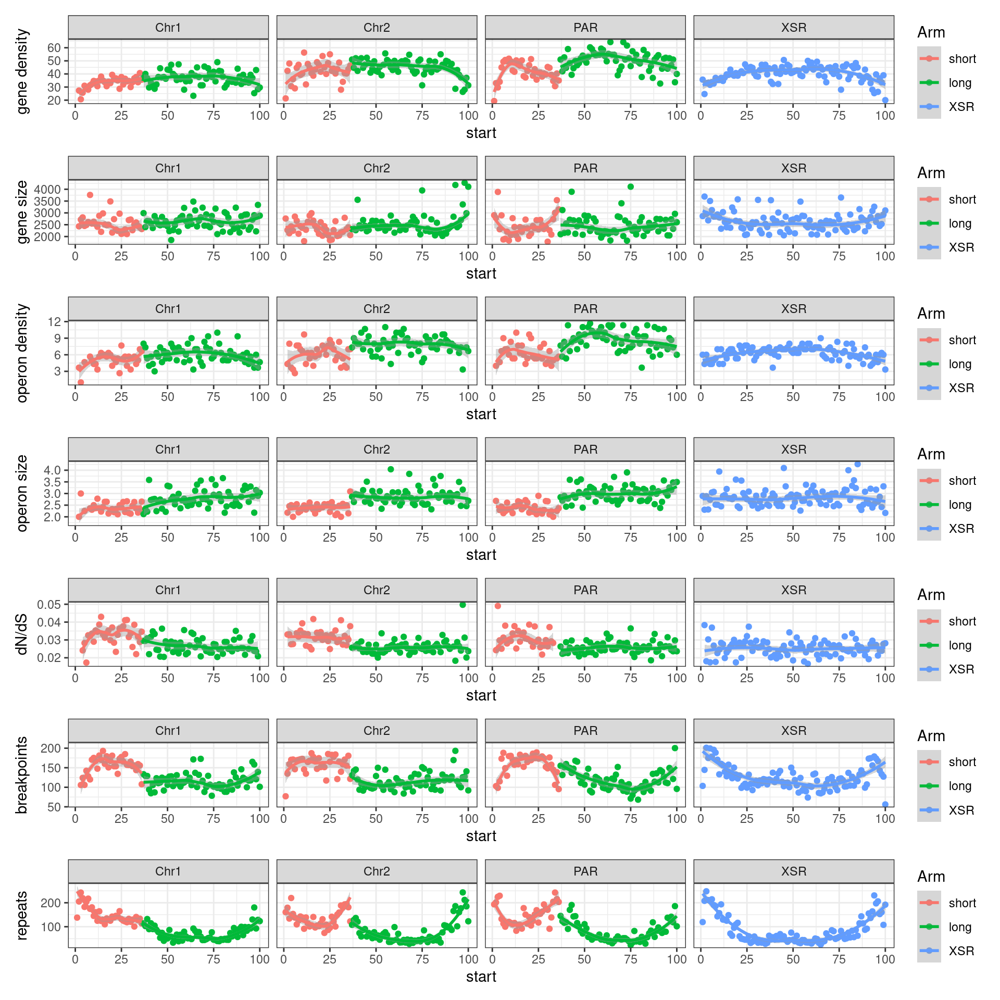
Extra
Other representations in a single-coordinate system.
Gene size and density vs. operon size and density, boxplot edition.
tb <- chrt_unified |> as.data.frame()
tb$seqnames_arm <- paste0(tb$seqnames, "_", tb$Oki.Arm)
toBoxPlot <- function(p) {
p$layers <- NULL
p + geom_boxplot(outlier.shape=NA) +
geom_point()
}
( ( p2 |> toBoxPlot() ) /
( p3 |> toBoxPlot() ) /
( p4 |> toBoxPlot() ) /
( p5 |> toBoxPlot() ) /
( p6 |> toBoxPlot() ) /
( p7 |> toBoxPlot() ) /
( p8 |> toBoxPlot() )
) + plot_layout(guides = 'collect')ggboxplot version, for statistics.
library(ggpubr)
tb <- chrt_unified |> as.data.frame()
tb$seqnames_arm <- paste0(tb$seqnames, "_", tb$Oki.Arm)
p2 <- ggboxplot(tb, x='seqnames_arm', y='transcripts.count.mean', color='Oki.Arm', add='jitter') + theme(axis.text.x=element_text(angle=90)) + ylab('gene density') + stat_compare_means(comparison=list(c('Chr1_short', 'Chr1_long'), c('Chr2_short', 'Chr2_long'), c('PAR_short', 'PAR_long'), c('XSR_XSR', 'PAR_short'), c('XSR_XSR', 'PAR_long')), paired = FALSE, na.rm = TRUE, method='t.test') + theme_classic() + theme(axis.title.x=element_blank())
p3 <- ggboxplot(tb, x='seqnames_arm', y='transcripts.length.mean', color='Oki.Arm', add='jitter') + theme(axis.text.x=element_text(angle=90)) + ylab('gene size') + stat_compare_means(comparison=list(c('Chr1_short', 'Chr1_long'), c('Chr2_short', 'Chr2_long'), c('PAR_short', 'PAR_long'), c('XSR_XSR', 'PAR_short'), c('XSR_XSR', 'PAR_long')), paired = FALSE, na.rm = TRUE, method='t.test') + theme_classic() + theme(axis.title.x=element_blank())
p4 <- ggboxplot(tb, x='seqnames_arm', y='operons.count.mean', color='Oki.Arm', add='jitter') + theme(axis.text.x=element_text(angle=90)) + ylab('operon density') + stat_compare_means(comparison=list(c('Chr1_short', 'Chr1_long'), c('Chr2_short', 'Chr2_long'), c('PAR_short', 'PAR_long'), c('XSR_XSR', 'PAR_short'), c('XSR_XSR', 'PAR_long')), paired = FALSE, na.rm = TRUE, method='t.test') + theme_classic() + theme(axis.title.x=element_blank())
p5 <- ggboxplot(tb, x='seqnames_arm', y='operons.length.mean', color='Oki.Arm', add='jitter') + theme(axis.text.x=element_text(angle=90)) + ylab('operon size') + stat_compare_means(comparison=list(c('Chr1_short', 'Chr1_long'), c('Chr2_short', 'Chr2_long'), c('PAR_short', 'PAR_long'), c('XSR_XSR', 'PAR_short'), c('XSR_XSR', 'PAR_long')), paired = FALSE, na.rm = TRUE, method='t.test') + theme_classic() + theme(axis.title.x=element_blank())
p6 <- ggboxplot(tb, x='seqnames_arm', y='transcripts.dNdS.mean', color='Oki.Arm', add='jitter') + theme(axis.text.x=element_text(angle=90)) + ylab('dN/dS') + stat_compare_means(comparison=list(c('Chr1_short', 'Chr1_long'), c('Chr2_short', 'Chr2_long'), c('PAR_short', 'PAR_long'), c('XSR_XSR', 'PAR_short'), c('XSR_XSR', 'PAR_long')), paired = FALSE, na.rm = TRUE, method='t.test') + theme_classic() + theme(axis.title.x=element_blank())
p7 <- ggboxplot(tb, x='seqnames_arm', y='breakpoints.count.mean', color='Oki.Arm', add='jitter') + theme(axis.text.x=element_text(angle=90)) + ylab('breakpoints') + stat_compare_means(comparison=list(c('Chr1_short', 'Chr1_long'), c('Chr2_short', 'Chr2_long'), c('PAR_short', 'PAR_long'), c('XSR_XSR', 'PAR_short'), c('XSR_XSR', 'PAR_long')), paired = FALSE, na.rm = TRUE, method='t.test') + theme_classic() + theme(axis.title.x=element_blank())
p8 <- ggboxplot(tb, x='seqnames_arm', y='repeats.count.mean', color='Oki.Arm', add='jitter') + theme(axis.text.x=element_text(angle=90)) + ylab('repeats') + stat_compare_means(comparison=list(c('Chr1_short', 'Chr1_long'), c('Chr2_short', 'Chr2_long'), c('PAR_short', 'PAR_long'), c('XSR_XSR', 'PAR_short'), c('XSR_XSR', 'PAR_long')), paired = FALSE, na.rm = TRUE, method='t.test') + theme_classic() + theme(axis.title.x=element_blank())
(p2 / p3 / p4 / p5 / p6 / p7 / p8 )
chrt_unified |>
as.data.frame() |>
subset(select=c("seqnames", "start", "end", "Oki.Arm", "categories.isolated.mean", "categories.collinear.mean", "categories.breakpoint.mean", "categories.bridge.mean" )) |>
tidyr::pivot_longer(c("categories.isolated.mean", "categories.collinear.mean", "categories.breakpoint.mean", "categories.bridge.mean")) |>
ggplot() +
aes(value, paste0(seqnames, "_", Oki.Arm), fill = name) +
geom_bar(position='fill', stat='identity') +
ylab("chr and arm") +
ggtitle("Tiles (averages across Oki, Osa, Bar): Alignment categories by location")
library(ggpubr)
tb <- chrt_unified |> as.data.frame()
tb$seqnames_arm <- paste0(tb$seqnames, "_", tb$Oki.Arm)
p0 <- tb |> subset(select=c("seqnames", "seqnames_arm", "start", "end", "Oki.Arm", "categories.isolated.mean", "categories.collinear.mean", "categories.breakpoint.mean", "categories.bridge.mean" )) |> tidyr::pivot_longer(c("categories.isolated.mean", "categories.collinear.mean", "categories.breakpoint.mean", "categories.bridge.mean")) |>
ggplot() +
aes(value, seqnames_arm, fill = name) +
facet_wrap(seqnames~Oki.Arm, nrow=1, scales='free') +
geom_bar(position='fill', stat='identity') +
theme(axis.text.y=element_blank(), axis.ticks.y =element_blank()) +
ylab("chr and arm") +
xlab("category")
p0 + ggtitle("Tiles (averages across Oki, Osa, Bar): Alignment categories across genome")
p1 <- ggplot( tb ) + aes(x=start, y=transcripts.dNdS.mean, col = Oki.Arm) + geom_point() + facet_wrap(~seqnames, nrow = 1) + geom_smooth(formula=y~x, method = 'loess', method.args = list(family = "symmetric")) + ylab('dN/dS')
p1 + ggtitle("Tiles (averages across Oki, Osa, Bar): Properties across genome")
p2 <- ggplot( tb ) + aes(x=start, y=breakpoints.count.mean , col = Oki.Arm) + geom_point() + facet_wrap(~seqnames, nrow = 1) + geom_smooth(formula=y~x, method = 'loess', method.args = list(family = "symmetric")) + ylab('breakpoints')
p2 + ggtitle("Tiles (averages across Oki, Osa, Bar): Properties across genome")
p3 <- ggboxplot(tb, x='seqnames_arm', y='breakpoints.count.mean', color='Oki.Arm', add='jitter') +
theme(axis.text.x=element_text(angle=90)) +
ylab('breakpoints') +
stat_compare_means(comparison=list(c('Chr1_short', 'Chr1_long'), c('Chr2_short', 'Chr2_long'), c('PAR_short', 'PAR_long'), c('XSR_XSR', 'PAR_short'), c('XSR_XSR', 'PAR_long')), paired = FALSE, na.rm = TRUE, method='t.test') +
theme_classic()
p3 + ggtitle('Tiles (averages across Oki, Osa, Bar): Breakpoints per chr+arm')
p4 <- ggboxplot(tb, x='seqnames_arm', y='transcripts.dNdS.mean', color='Oki.Arm', add='jitter') +
theme(axis.text.x=element_text(angle=90)) +
ylab('dN/dS') +
stat_compare_means(comparison=list(c('Chr1_short', 'Chr1_long'), c('Chr2_short', 'Chr2_long'), c('PAR_short', 'PAR_long'), c('XSR_XSR', 'PAR_short'), c('XSR_XSR', 'PAR_long')), paired = FALSE, na.rm = TRUE, method='t.test') +
theme_classic()
p4 + ggtitle('Tiles (averages across Oki, Osa, Bar): dNdS per chr+arm')
# And a correlation plot
p5 <- ggplot(tb) + aes(x=breakpoints.count.mean, y=transcripts.dNdS.mean) + geom_point() + geom_smooth(method='lm', col='red' , formula=y~x) + ggpubr::stat_cor() + facet_wrap(seqnames~Oki.Arm, nrow=1, scales = 'free') + ylab('dN/dS')
p5 + ggtitle('Tiles (averages across Oki, Osa, Bar): dNdS per chr+arm') 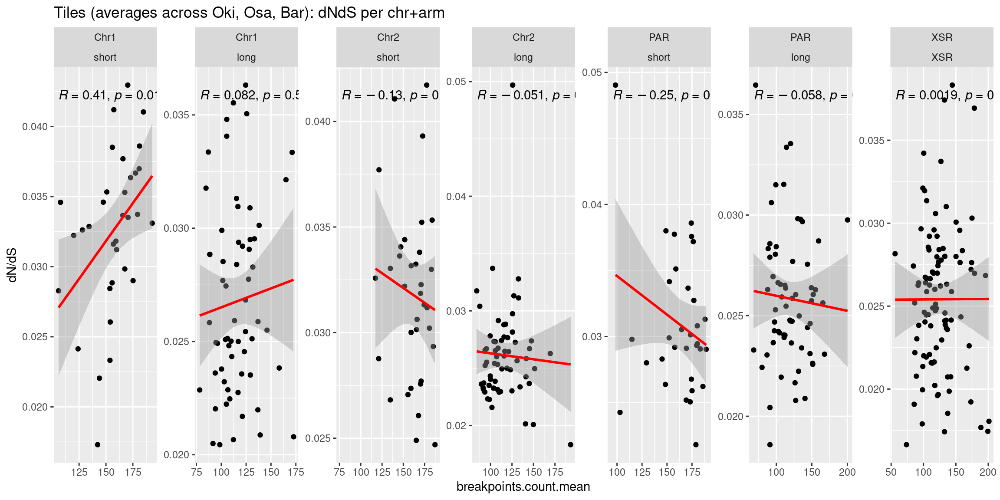
p6 <- ggplot(tb) + aes(x=breakpoints.count.mean, y=repeats.count.mean) + geom_point() + geom_smooth(method='lm', col='red' , formula=y~x) + ggpubr::stat_cor() + facet_wrap(seqnames~Oki.Arm, nrow=1, scales = 'free') + ylab('repeats')
p6 
layout <- "
A
B
C
D
E
F
"
( p0 / p1 / p4 / p2 / p3 / p5 ) #+ plot_layout(design = layout, guides = 'collect')
( p0 / p1 / p4 / p2 / p3 )
( p1 / p2 / p3 / p4 )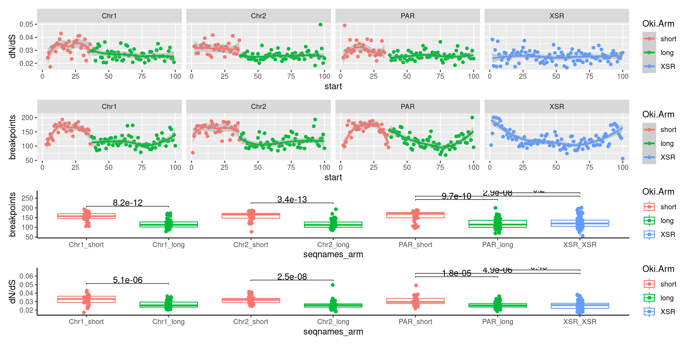
( p1 / p2 / p3 )
( p0 / p1 / p2 / p3 )
detach('package:ggpubr')Version with boxplots superimposed on chromosomes.
library(ggpubr)
tb <- chrt_unified |> as.data.frame()
tb$seqnames_arm <- paste0(tb$seqnames, "_", tb$Oki.Arm)
#tb$seqnames_arm <- paste0(tb$seqnames, "_", tb$Osa.Arm)
#tb$seqnames_arm <- paste0(tb$seqnames, "_", tb$Bar.Arm)
p0 <- tb |> subset(select=c("seqnames", "seqnames_arm", "start", "end", "Oki.Arm", "categories.isolated.mean", "categories.collinear.mean", "categories.breakpoint.mean", "categories.bridge.mean" )) |> tidyr::pivot_longer(c("categories.isolated.mean", "categories.collinear.mean", "categories.breakpoint.mean", "categories.bridge.mean")) |>
ggplot() +
aes(value, seqnames_arm, fill = name) +
facet_wrap(seqnames~Oki.Arm, nrow=1, scales='free') +
geom_bar(position='fill', stat='identity') +
theme(axis.text.y=element_blank(), axis.ticks.y =element_blank()) +
ylab("chr and arm") +
xlab("category")
p0 + ggtitle("Tiles (averages across Oki, Osa, Bar): Alignment categories by position")
p1 <- ggplot(tb) + aes(x=start, y=transcripts.dNdS.mean, col = Oki.Arm) + geom_boxplot(outlier.shape=NA) + geom_point() + facet_wrap(~seqnames, nrow = 1) + ylab('dN/dS')
p1 + ggtitle("Tiles (averages across Oki, Osa, Bar): dN/dS across genome")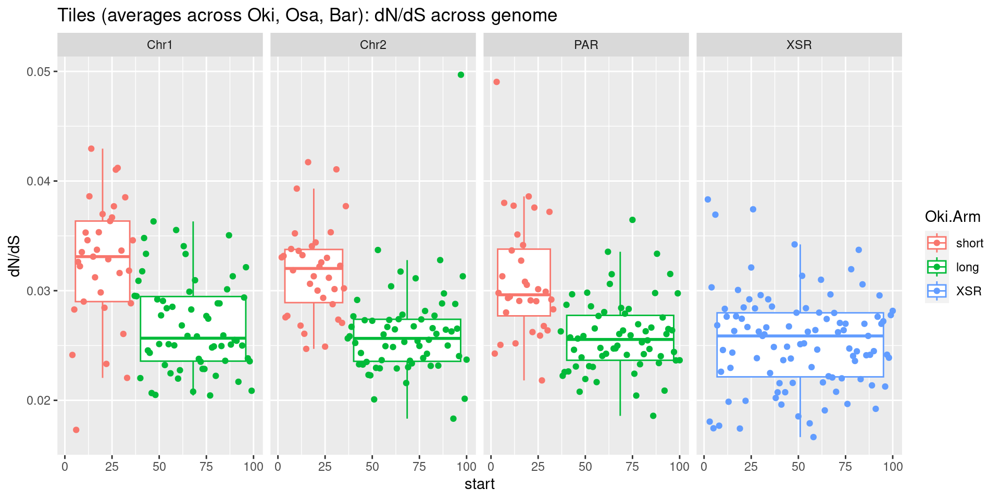
p1 <- p1 + theme(axis.title.x=element_blank()) # remove X labels for later
p2 <- ggplot( chrt_unified |> as.data.frame() ) + aes(x=start, y=breakpoints.count.mean , col = Oki.Arm) + geom_boxplot(outlier.shape=NA) + geom_point() + facet_wrap(~seqnames, nrow = 1) + ylab('Breakpoints')
p2 + ggtitle("Tiles (averages across Oki, Osa, Bar): Breakpoints across genome")
# And a correlation plot
p3 <- ggplot(tb) + aes(x=breakpoints.count.mean, y=transcripts.dNdS.mean) + geom_point() + geom_smooth(method='lm', col='red' , formula=y~x) + ggpubr::stat_cor() + facet_wrap(seqnames~Oki.Arm, nrow=1, scales = 'free') + ylab('dN/dS')
p3 + ggtitle('Tiles (averages across Oki, Osa, Bar): dNdS per chr+arm')
p3 <- p3 + theme(axis.title.x=element_blank()) # remove X labels for later
p4 <- ggplot(tb) + aes(x=breakpoints.count.mean, y=repeats.count.mean) + geom_point() + geom_smooth(method='lm', col='red' , formula=y~x) + ggpubr::stat_cor() + facet_wrap(seqnames~Oki.Arm, nrow=1, scales = 'free') + ylab('repeats') + xlab('Breakpoints')
p4
( p0 / p1 / p2 / p3 / p4 )Edges vs. centres of chromosomes
# Flag the first and last (percentile) of total width for every chromosome.
flag_chromosome_percentiles <- function(chrt, percentile=0.1) {
original_names <- names(chrt)
gr_list <- split(chrt, seqnames(chrt))
edge_annotations <- endoapply(gr_list, function(gr){
gr$chr.edge <- "centre"
total_length <- gr |> width() |> sum()
length_percentile <- end(gr)/total_length
cumulative_length <- cumsum(gr |> width())
cumulative_percentile <- cumulative_length/total_length
gr$chr.edge[cumulative_percentile<percentile] <- "edge"
gr$chr.edge[cumulative_percentile>(1-percentile)] <- "edge"
gr
})
edge_annotations <- unlist(edge_annotations)
names(edge_annotations) <- original_names
edge_annotations
}
#chrt_unified |> flag_chromosome_percentiles()
# Flag the first and last (percentile) of total width for every chromosome's individual arm.
flag_chromosome_arm_percentiles <- function(chrt, percentile=0.1, arm="Oki.Arm") {
original_names <- names(chrt)
chrt$seqnames_arm <- paste0(seqnames(chrt), "_", mcols(chrt)[[arm]])
gr_list <- split(chrt, chrt$seqnames_arm)
edge_annotations <- endoapply(gr_list, function(gr){
gr$chr.arm.edge <- "centre"
total_length <- gr |> width() |> sum()
length_percentile <- end(gr)/total_length
cumulative_length <- cumsum(gr |> width())
cumulative_percentile <- cumulative_length/total_length
gr$chr.arm.edge[cumulative_percentile<percentile] <- "edge"
gr$chr.arm.edge[cumulative_percentile>(1-percentile)] <- "edge"
gr
})
edge_annotations <- unlist(edge_annotations)
names(edge_annotations) <- original_names
edge_annotations
}Assess the edges vs. centres of chromosomes for feature densities/counts.
library(ggpubr)
compare_method = "t.test"
#compare_method = "wilcox.test"
tb <- chrt_unified |> flag_chromosome_percentiles() |> flag_chromosome_arm_percentiles() |> as.data.frame()
tb$seqnames_arm_edge <- paste0(tb$seqnames_arm, "_", tb$chr.arm.edge)
tb$seqnames_arm_edge <- factor(tb$seqnames_arm_edge, levels=c("Chr1_short_edge", "Chr1_short_centre", "Chr1_long_edge", "Chr1_long_centre", "Chr2_short_edge", "Chr2_short_centre", "Chr2_long_edge", "Chr2_long_centre", "PAR_short_edge", "PAR_short_centre", "PAR_long_edge", "PAR_long_centre", "XSR_XSR_edge", "XSR_XSR_centre"))
p1 <- ggboxplot(tb, x='seqnames_arm_edge', y='repeats.count.mean', color='seqnames_arm', add='jitter') + ylab('repeats') + stat_compare_means(comparison=list(c('Chr1_short_edge', 'Chr1_short_centre'), c('Chr1_long_edge', 'Chr1_long_centre'), c('Chr2_short_edge', 'Chr2_short_centre'), c('Chr2_long_edge', 'Chr2_long_centre'), c('PAR_short_edge', 'PAR_short_centre'), c('PAR_long_edge', 'PAR_long_centre'), c('XSR_XSR_edge', 'XSR_XSR_centre')), label='p.signif', paired = FALSE, na.rm = TRUE, method=compare_method) + theme_classic() + theme(axis.text.x=element_text(angle=90))
p1 + ggtitle('Tiles (averages across Oki, Osa, Bar): Repeats per chr+arm, edges vs. centres')
p1 <- ggboxplot(tb, x='chr.arm.edge', y='repeats.count.mean', color='chr.arm.edge', add='jitter') + ylab('repeats') + stat_compare_means(comparison=list(c('centre', 'edge')), label='p.signif', paired = FALSE, na.rm = TRUE, method=compare_method) + theme_classic() + theme(axis.text.x=element_text(angle=90))
p1 + ggtitle('Tiles (averages across Oki, Osa, Bar): Repeats per chr+arm, edges vs. centres')
p2 <- ggboxplot(tb, x='seqnames_arm_edge', y='transcripts.count.mean', color='seqnames_arm', add='jitter') + ylab('transcripts') + stat_compare_means(comparison=list(c('Chr1_short_edge', 'Chr1_short_centre'), c('Chr1_long_edge', 'Chr1_long_centre'), c('Chr2_short_edge', 'Chr2_short_centre'), c('Chr2_long_edge', 'Chr2_long_centre'), c('PAR_short_edge', 'PAR_short_centre'), c('PAR_long_edge', 'PAR_long_centre'), c('XSR_XSR_edge', 'XSR_XSR_centre')), label='p.signif', paired = FALSE, na.rm = TRUE, method=compare_method) + theme_classic() + theme(axis.text.x=element_text(angle=90))
p2 + ggtitle('Tiles (averages across Oki, Osa, Bar): Transcript number per chr+arm, edges vs. centres')
p2 <- ggboxplot(tb, x='chr.arm.edge', y='transcripts.count.mean', color='chr.arm.edge', add='jitter') + ylab('transcripts') + stat_compare_means(comparison=list(c('centre', 'edge')), label='p.signif', paired = FALSE, na.rm = TRUE, method=compare_method) + theme_classic() + theme(axis.text.x=element_text(angle=90))
p2 + ggtitle('Tiles (averages across Oki, Osa, Bar): Transcript number per chr+arm, edges vs. centres')
p3 <- ggboxplot(tb, x='seqnames_arm_edge', y='transcripts.length.mean', color='seqnames_arm', add='jitter') + ylab('transcript length') + stat_compare_means(comparison=list(c('Chr1_short_edge', 'Chr1_short_centre'), c('Chr1_long_edge', 'Chr1_long_centre'), c('Chr2_short_edge', 'Chr2_short_centre'), c('Chr2_long_edge', 'Chr2_long_centre'), c('PAR_short_edge', 'PAR_short_centre'), c('PAR_long_edge', 'PAR_long_centre'), c('XSR_XSR_edge', 'XSR_XSR_centre')), label='p.signif', paired = FALSE, na.rm = TRUE, method=compare_method) + theme_classic() + theme(axis.text.x=element_text(angle=90))
p3 + ggtitle('Tiles (averages across Oki, Osa, Bar): Transcript length per chr+arm, edges vs. centres')
p3 <- ggboxplot(tb, x='chr.arm.edge', y='transcripts.length.mean', color='chr.arm.edge', add='jitter') + ylab('transcript length') + stat_compare_means(comparison=list(c('centre', 'edge')), label='p.signif', paired = FALSE, na.rm = TRUE, method=compare_method) + theme_classic() + theme(axis.text.x=element_text(angle=90))
p3 + ggtitle('Tiles (averages across Oki, Osa, Bar): Transcript length per chr+arm, edges vs. centres')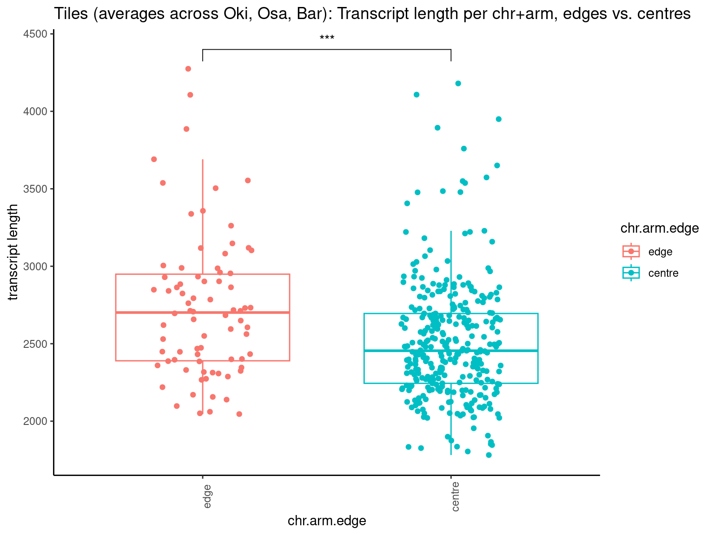
p4 <- ggboxplot(tb, x='seqnames_arm_edge', y='operons.count.mean', color='seqnames_arm', add='jitter') + ylab('operon count') + stat_compare_means(comparison=list(c('Chr1_short_edge', 'Chr1_short_centre'), c('Chr1_long_edge', 'Chr1_long_centre'), c('Chr2_short_edge', 'Chr2_short_centre'), c('Chr2_long_edge', 'Chr2_long_centre'), c('PAR_short_edge', 'PAR_short_centre'), c('PAR_long_edge', 'PAR_long_centre'), c('XSR_XSR_edge', 'XSR_XSR_centre')), label='p.signif', paired = FALSE, na.rm = TRUE, method=compare_method) + theme_classic() + theme(axis.text.x=element_text(angle=90))
p4 + ggtitle('Tiles (averages across Oki, Osa, Bar): Operon number per chr+arm, edges vs. centres')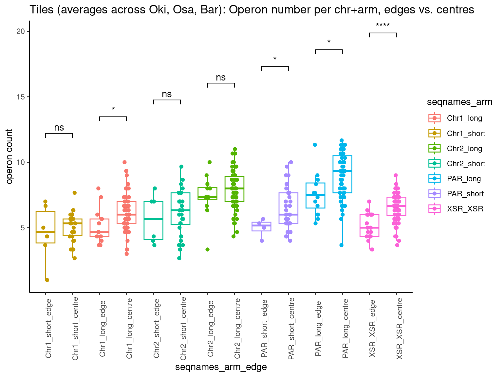
p4 <- ggboxplot(tb, x='chr.arm.edge', y='operons.count.mean', color='chr.arm.edge', add='jitter') + ylab('operon count') + stat_compare_means(comparison=list(c('centre', 'edge')), label='p.signif', paired = FALSE, na.rm = TRUE, method=compare_method) + theme_classic() + theme(axis.text.x=element_text(angle=90))
p4 + ggtitle('Tiles (averages across Oki, Osa, Bar): Operon number per chr+arm, edges vs. centres')
p5 <- ggboxplot(tb, x='seqnames_arm_edge', y='operons.length.mean', color='seqnames_arm', add='jitter') + ylab('operon size') + stat_compare_means(comparison=list(c('Chr1_short_edge', 'Chr1_short_centre'), c('Chr1_long_edge', 'Chr1_long_centre'), c('Chr2_short_edge', 'Chr2_short_centre'), c('Chr2_long_edge', 'Chr2_long_centre'), c('PAR_short_edge', 'PAR_short_centre'), c('PAR_long_edge', 'PAR_long_centre'), c('XSR_XSR_edge', 'XSR_XSR_centre')), label='p.signif', paired = FALSE, na.rm = TRUE, method=compare_method) + theme_classic() + theme(axis.text.x=element_text(angle=90))
p5 + ggtitle('Tiles (averages across Oki, Osa, Bar): Operon size per chr+arm, edges vs. centres')
p5 <- ggboxplot(tb, x='chr.arm.edge', y='operons.length.mean', color='chr.arm.edge', add='jitter') + ylab('operon size') + stat_compare_means(comparison=list(c('centre', 'edge')), label='p.signif', paired = FALSE, na.rm = TRUE, method=compare_method) + theme_classic() + theme(axis.text.x=element_text(angle=90))
p5 + ggtitle('Tiles (averages across Oki, Osa, Bar): Operon size per chr+arm, edges vs. centres')
p6 <- ggboxplot(tb, x='seqnames_arm_edge', y='breakpoints.count.mean', color='seqnames_arm', add='jitter') + ylab('breakpoints') + stat_compare_means(comparison=list(c('Chr1_short_edge', 'Chr1_short_centre'), c('Chr1_long_edge', 'Chr1_long_centre'), c('Chr2_short_edge', 'Chr2_short_centre'), c('Chr2_long_edge', 'Chr2_long_centre'), c('PAR_short_edge', 'PAR_short_centre'), c('PAR_long_edge', 'PAR_long_centre'), c('XSR_XSR_edge', 'XSR_XSR_centre')), label='p.signif', paired = FALSE, na.rm = TRUE, method=compare_method) + theme_classic() + theme(axis.text.x=element_text(angle=90))
p6 + ggtitle('Tiles (averages across Oki, Osa, Bar): Breakpoints per chr+arm, edges vs. centres')
p6 <- ggboxplot(tb, x='chr.arm.edge', y='breakpoints.count.mean', color='chr.arm.edge', add='jitter') + ylab('breakpoints') + stat_compare_means(comparison=list(c('centre', 'edge')), label='p.signif', paired = FALSE, na.rm = TRUE, method=compare_method) + theme_classic() + theme(axis.text.x=element_text(angle=90))
p6 + ggtitle('Tiles (averages across Oki, Osa, Bar): Breakpoints per chr+arm, edges vs. centres')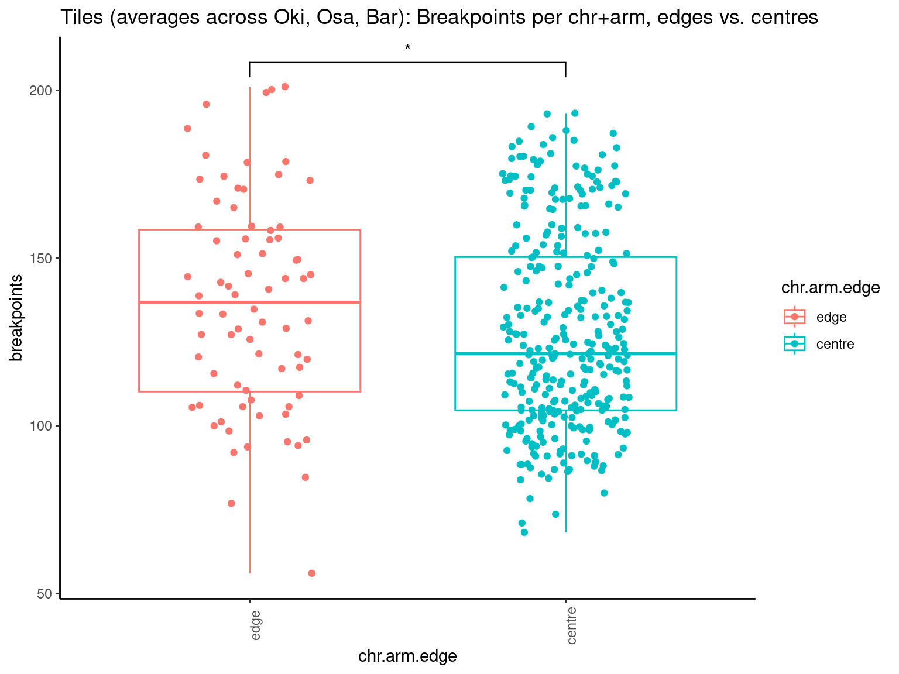
p7 <- ggboxplot(tb, x='seqnames_arm_edge', y='transcripts.dNdS.mean', color='seqnames_arm', add='jitter') + ylab('dN/dS') + stat_compare_means(comparison=list(c('Chr1_short_edge', 'Chr1_short_centre'), c('Chr1_long_edge', 'Chr1_long_centre'), c('Chr2_short_edge', 'Chr2_short_centre'), c('Chr2_long_edge', 'Chr2_long_centre'), c('PAR_short_edge', 'PAR_short_centre'), c('PAR_long_edge', 'PAR_long_centre'), c('XSR_XSR_edge', 'XSR_XSR_centre')), label='p.signif', paired = FALSE, na.rm = TRUE, method=compare_method) + theme_classic() + theme(axis.text.x=element_text(angle=90))
p7 <- ggboxplot(tb, x='chr.arm.edge', y='transcripts.dNdS.mean', color='chr.arm.edge', add='jitter') + ylab('dN/dS') + stat_compare_means(comparison=list(c('centre', 'edge')), label='p.signif', paired = FALSE, na.rm = TRUE, method=compare_method) + theme_classic() + theme(axis.text.x=element_text(angle=90))
p7 + ggtitle('Tiles (averages across Oki, Osa, Bar): dN/dS per chr+arm, edges vs. centres')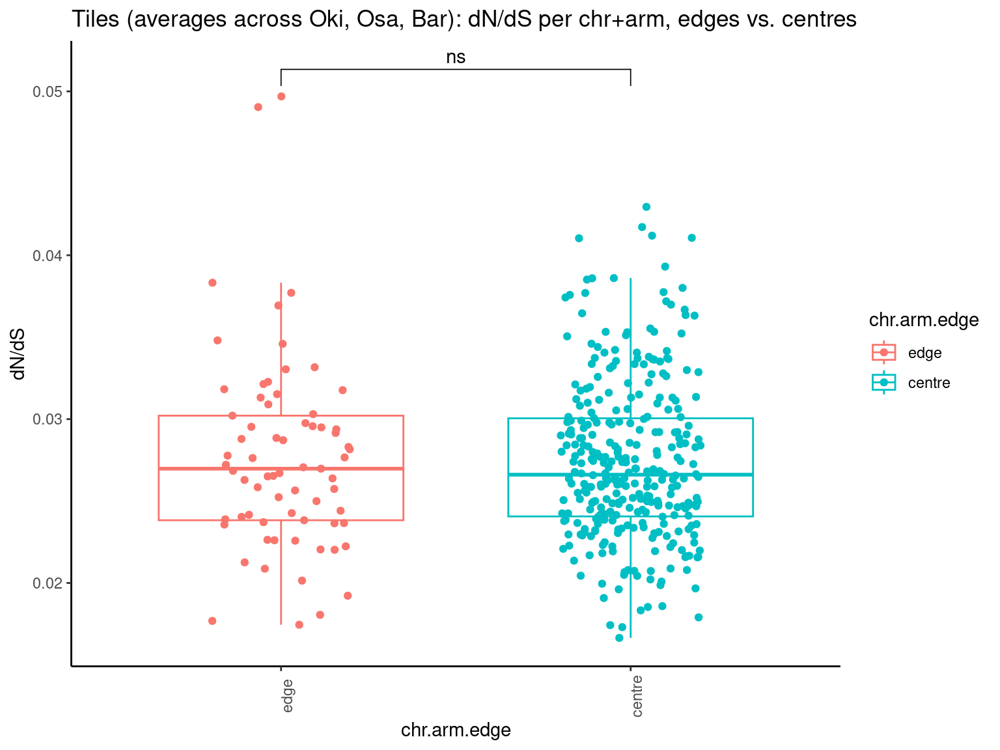
detach('package:ggpubr')Pericentromeric and subtelomeric regions
# Flag the first and last (percentile) of total width for every chromosome's individual arm.
flag_subtelomeric_pericentromeric <- function(chrt, percentile=0.1, arm="Oki.Arm") {
original_names <- names(chrt)
chrt$seqnames_arm <- paste0(seqnames(chrt), "_", mcols(chrt)[[arm]])
gr_list <- split(chrt, chrt$seqnames_arm)
edge_annotations <- endoapply(gr_list, function(gr){
gr$chr.arm.edge <- "centre"
total_length <- gr |> width() |> sum()
length_percentile <- end(gr)/total_length
cumulative_length <- cumsum(gr |> width())
cumulative_percentile <- cumulative_length/total_length
gr$chr.arm.label <- "centre"
gr$chr.arm.label[ mcols(gr)[[arm]] == "short" & cumulative_percentile<percentile ] <- "subtelomeric"
gr$chr.arm.label[ mcols(gr)[[arm]] == "short" & cumulative_percentile>(1-percentile) ] <- "pericentromeric"
gr$chr.arm.label[ mcols(gr)[[arm]] == "long" & cumulative_percentile<percentile ] <- "pericentromeric"
gr$chr.arm.label[ mcols(gr)[[arm]] == "long" & cumulative_percentile>(1-percentile) ] <- "subtelomeric"
gr$chr.arm.label[ mcols(gr)[[arm]] == "XSR" & cumulative_percentile<percentile ] <- "centre"
gr$chr.arm.label[ mcols(gr)[[arm]] == "XSR" & cumulative_percentile>(1-percentile) ] <- "subtelomeric"
gr
})
edge_annotations <- unlist(edge_annotations)
names(edge_annotations) <- original_names
edge_annotations
}
library(ggpubr)
compare_method = "t.test"
#compare_method = "wilcox.test"
percentile <- 0.1
tb <- chrt_unified |> flag_chromosome_percentiles(percentile = percentile) |> flag_chromosome_arm_percentiles(percentile = percentile) |> flag_subtelomeric_pericentromeric(percentile = percentile) |> as.data.frame()
tb$seqnames_arm_category <- paste0(tb$seqnames_arm, "_", tb$chr.arm.label)
tb$seqnames_arm_category <- factor(tb$seqnames_arm_category, levels=c("Chr1_long_pericentromeric", "Chr1_long_centre", "Chr1_long_subtelomeric", "Chr1_short_subtelomeric", "Chr1_short_centre", "Chr1_short_pericentromeric", "Chr2_long_pericentromeric", "Chr2_long_centre", "Chr2_long_subtelomeric", "Chr2_short_subtelomeric", "Chr2_short_centre", "Chr2_short_pericentromeric", "PAR_long_pericentromeric", "PAR_long_centre", "PAR_long_subtelomeric", "PAR_short_subtelomeric", "PAR_short_centre", "PAR_short_pericentromeric", "XSR_XSR_centre", "XSR_XSR_subtelomeric"))
# Check everything individually.
# Repeats
p1 <- ggboxplot(tb, x='seqnames_arm_category', y='repeats.count.mean', color='seqnames_arm', add='jitter') + ylab('repeats') + theme_classic() + theme(axis.text.x=element_text(angle=90))
p1 + ggtitle('Tiles (averages across Oki, Osa, Bar): repeats by genomic region')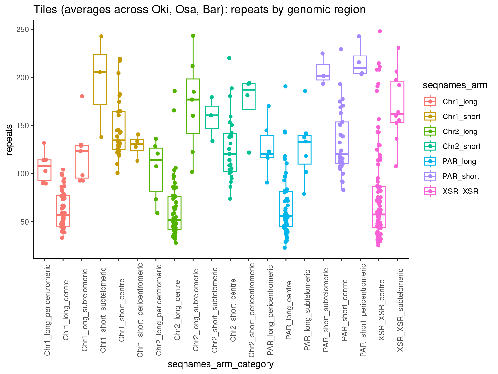
p2 <- ggboxplot(tb, x='chr.arm.label', y='repeats.count.mean', color='chr.arm.label', add='jitter') + ylab('repeats') + theme_classic() + theme(axis.text.x=element_text(angle=90)) + stat_compare_means(comparison=list(c('pericentromeric', 'centre'), c('pericentromeric', 'subtelomeric'), c('centre', 'subtelomeric')), label='p.signif', paired = FALSE, na.rm = TRUE, method=compare_method)
p2 + ggtitle('Tiles (averages across Oki, Osa, Bar): repeats by genomic region')
# Genes
p3 <- ggboxplot(tb, x='seqnames_arm_category', y='transcripts.count.mean', color='seqnames_arm', add='jitter') + ylab('transcripts') + theme_classic() + theme(axis.text.x=element_text(angle=90))
p3 + ggtitle('Tiles (averages across Oki, Osa, Bar): transcripts by genomic region')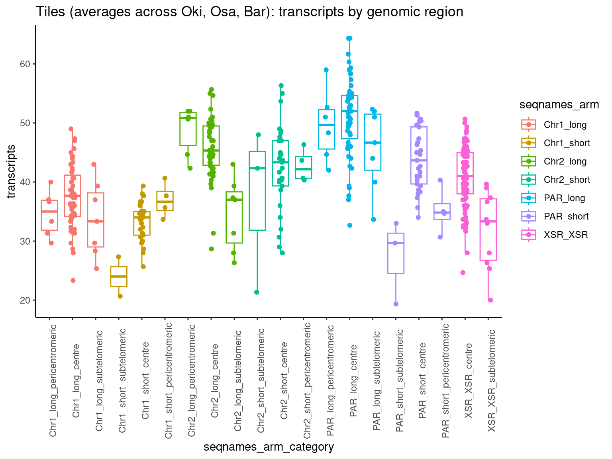
p4 <- ggboxplot(tb, x='chr.arm.label', y='transcripts.count.mean', color='chr.arm.label', add='jitter') + ylab('transcripts') + theme_classic() + theme(axis.text.x=element_text(angle=90)) + stat_compare_means(comparison=list(c('pericentromeric', 'centre'), c('pericentromeric', 'subtelomeric'), c('centre', 'subtelomeric')), label='p.signif', paired = FALSE, na.rm = TRUE, method=compare_method)
p4 + ggtitle('Tiles (averages across Oki, Osa, Bar): transcripts by genomic region')
p5 <- ggboxplot(tb, x='seqnames_arm_category', y='transcripts.length.mean', color='seqnames_arm', add='jitter') + ylab('transcripts') + theme_classic() + theme(axis.text.x=element_text(angle=90))
p5 + ggtitle('Tiles (averages across Oki, Osa, Bar): transcript lengths by genomic region')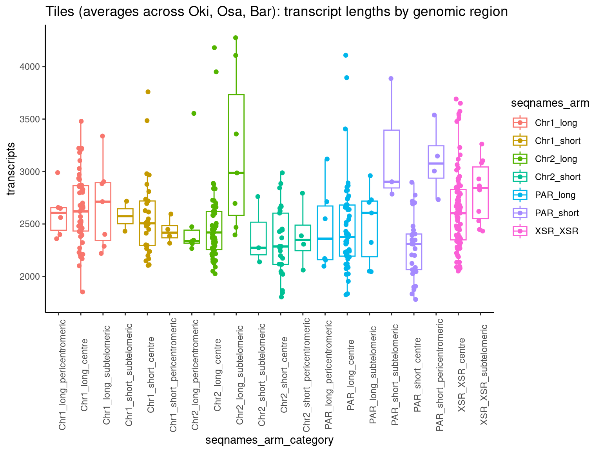
p6 <- ggboxplot(tb, x='chr.arm.label', y='transcripts.length.mean', color='chr.arm.label', add='jitter') + ylab('transcripts') + theme_classic() + theme(axis.text.x=element_text(angle=90)) + stat_compare_means(comparison=list(c('pericentromeric', 'centre'), c('pericentromeric', 'subtelomeric'), c('centre', 'subtelomeric')), label='p.signif', paired = FALSE, na.rm = TRUE, method=compare_method)
p6 + ggtitle('Tiles (averages across Oki, Osa, Bar): transcript lengths by genomic region')
# Operons
p7 <- ggboxplot(tb, x='seqnames_arm_category', y='operons.count.mean', color='seqnames_arm', add='jitter') + ylab('operons') + theme_classic() + theme(axis.text.x=element_text(angle=90))
p7 + ggtitle('Tiles (averages across Oki, Osa, Bar): operons by genomic region')
p8 <- ggboxplot(tb, x='chr.arm.label', y='operons.count.mean', color='chr.arm.label', add='jitter') + ylab('operons') + theme_classic() + theme(axis.text.x=element_text(angle=90)) + stat_compare_means(comparison=list(c('pericentromeric', 'centre'), c('pericentromeric', 'subtelomeric'), c('centre', 'subtelomeric')), label='p.signif', paired = FALSE, na.rm = TRUE, method=compare_method)
p8 + ggtitle('Tiles (averages across Oki, Osa, Bar): operons by genomic region')
p9 <- ggboxplot(tb, x='seqnames_arm_category', y='operons.length.mean', color='seqnames_arm', add='jitter') + ylab('operon length') + theme_classic() + theme(axis.text.x=element_text(angle=90))
p9 + ggtitle('Tiles (averages across Oki, Osa, Bar): operon lengths by genomic region')
p10 <- ggboxplot(tb, x='chr.arm.label', y='operons.length.mean', color='chr.arm.label', add='jitter') + ylab('operon length') + theme_classic() + theme(axis.text.x=element_text(angle=90)) + stat_compare_means(comparison=list(c('pericentromeric', 'centre'), c('pericentromeric', 'subtelomeric'), c('centre', 'subtelomeric')), label='p.signif', paired = FALSE, na.rm = TRUE, method=compare_method)
p10 + ggtitle('Tiles (averages across Oki, Osa, Bar): operon lengths by genomic region')
# Breakpoints
p11 <- ggboxplot(tb, x='seqnames_arm_category', y='breakpoints.count.mean', color='seqnames_arm', add='jitter') + ylab('breakpoints') + theme_classic() + theme(axis.text.x=element_text(angle=90))
p11 + ggtitle('Tiles (averages across Oki, Osa, Bar): breakpoints by genomic region')
p12 <- ggboxplot(tb, x='chr.arm.label', y='breakpoints.count.mean', color='chr.arm.label', add='jitter') + ylab('breakpoints') + theme_classic() + theme(axis.text.x=element_text(angle=90)) + stat_compare_means(comparison=list(c('pericentromeric', 'centre'), c('pericentromeric', 'subtelomeric'), c('centre', 'subtelomeric')), label='p.signif', paired = FALSE, na.rm = TRUE, method=compare_method)
p12 + ggtitle('Tiles (averages across Oki, Osa, Bar): breakpoints by genomic region')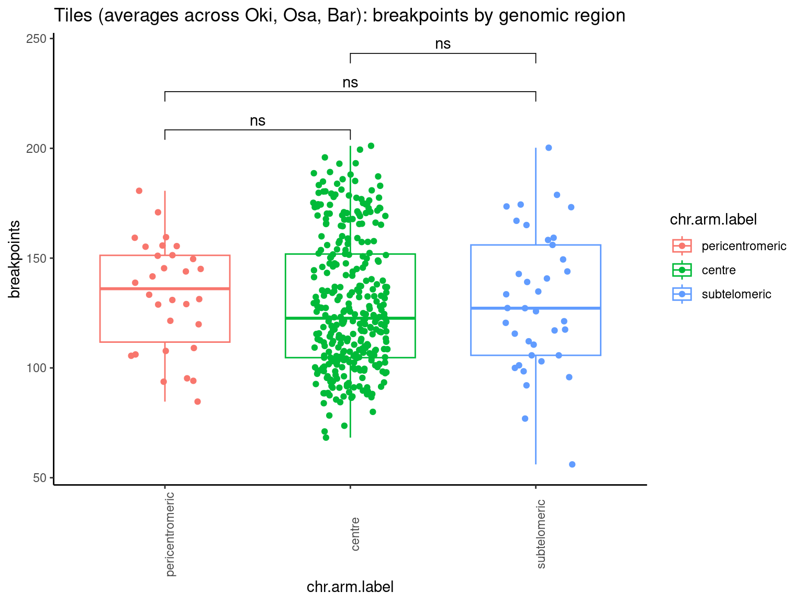
# dN/dS
p13 <- ggboxplot(tb, x='seqnames_arm_category', y='transcripts.dNdS.mean', color='seqnames_arm', add='jitter') + ylab('dN/dS') + theme_classic() + theme(axis.text.x=element_text(angle=90))
p13 + ggtitle('Tiles (averages across Oki, Osa, Bar): dN/dS by genomic region')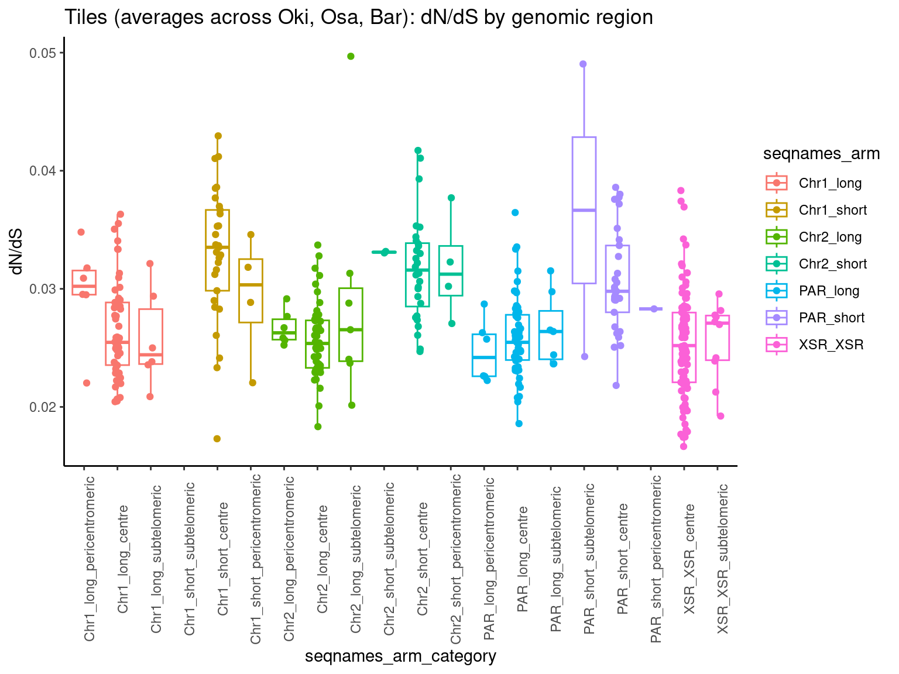
p14 <- ggboxplot(tb, x='chr.arm.label', y='transcripts.dNdS.mean', color='chr.arm.label', add='jitter') + ylab('dN/dS') + theme_classic() + theme(axis.text.x=element_text(angle=90)) + stat_compare_means(comparison=list(c('pericentromeric', 'centre'), c('pericentromeric', 'subtelomeric'), c('centre', 'subtelomeric')), label='p.signif', paired = FALSE, na.rm = TRUE, method=compare_method)
p14 + ggtitle('Tiles (averages across Oki, Osa, Bar): dN/dS by genomic region')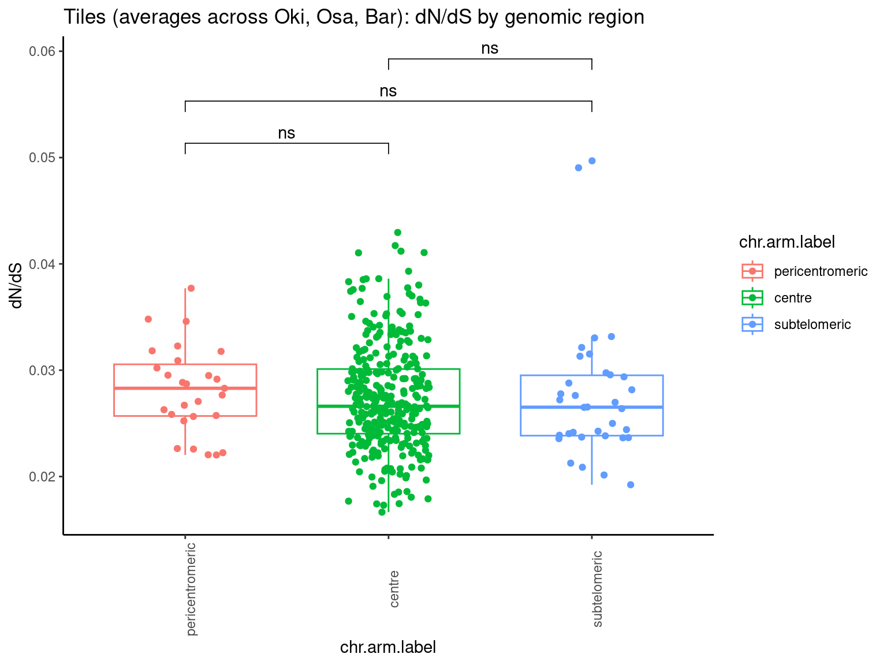
detach('package:ggpubr')Checking my work
Double-checking breakpoint patterns to make sure they make sense and match the averages.
p1 <- chrt_unified |> as.data.frame() |> subset(select=c("seqnames", "start", "end", "Oki.bp.Oki_Osa.breaks.count", "Oki.bp.Oki_Osa.breaks.count", "Oki.bp.Oki_Bar.breaks.count", "Oki.bp.Oki_Kum.breaks.count", "Oki.bp.Oki_Aom.breaks.count", "Oki.bp.Oki_Nor.breaks.count")) |> tidyr::pivot_longer(c("Oki.bp.Oki_Osa.breaks.count", "Oki.bp.Oki_Osa.breaks.count", "Oki.bp.Oki_Bar.breaks.count", "Oki.bp.Oki_Kum.breaks.count", "Oki.bp.Oki_Aom.breaks.count", "Oki.bp.Oki_Nor.breaks.count")) |> ggplot() + aes(start, value, col=name) + facet_wrap(~seqnames, nrow=1) + geom_smooth(method='loess', formula=y~x, span=0.25, se=FALSE, method.args=list(family="symmetric"))
p2 <- chrt_unified |> as.data.frame() |> subset(select=c("seqnames", "start", "end", "Osa.bp.Osa_Oki.breaks.count", "Osa.bp.Osa_Bar.breaks.count", "Osa.bp.Osa_Aom.breaks.count", "Osa.bp.Osa_Kum.breaks.count", "Osa.bp.Osa_Nor.breaks.count")) |> tidyr::pivot_longer(c("Osa.bp.Osa_Oki.breaks.count", "Osa.bp.Osa_Bar.breaks.count", "Osa.bp.Osa_Aom.breaks.count", "Osa.bp.Osa_Kum.breaks.count", "Osa.bp.Osa_Nor.breaks.count")) |> ggplot() + aes(start, value, col=name) + facet_wrap(~seqnames, nrow=1) + geom_smooth(method='loess', formula=y~x, span=0.25, se=FALSE, method.args=list(family="symmetric"))
p3 <- chrt_unified |> as.data.frame() |> subset(select=c("seqnames", "start", "end", "Bar.bp.Bar_Oki.breaks.count", "Bar.bp.Bar_Osa.breaks.count", "Bar.bp.Bar_Aom.breaks.count", "Bar.bp.Bar_Kum.breaks.count", "Bar.bp.Bar_Nor.breaks.count")) |> tidyr::pivot_longer(c("Bar.bp.Bar_Oki.breaks.count", "Bar.bp.Bar_Osa.breaks.count", "Bar.bp.Bar_Aom.breaks.count", "Bar.bp.Bar_Kum.breaks.count", "Bar.bp.Bar_Nor.breaks.count")) |> ggplot() + aes(start, value, col=name) + facet_wrap(~seqnames, nrow=1) + geom_smooth(method='loess', formula=y~x, span=0.25, se=FALSE, method.args=list(family="symmetric"))
(p1 / p2 / p3)Same with dN/dS.
p1 <- chrt_unified |> as.data.frame() |> ggplot() + aes(start, Oki.transcripts.dNdS_GUIDANCE2.median, col=Oki.Arm) + facet_wrap(~seqnames, nrow=1) + geom_point() + geom_smooth(method='loess', formula=y~x, span=0.25, se=T, method.args=list(family="symmetric"))
p2 <- chrt_unified |> as.data.frame() |> ggplot() + aes(start, Osa.transcripts.dNdS_GUIDANCE2.median, col=Osa.Arm) + facet_wrap(~seqnames, nrow=1) + geom_point() + geom_smooth(method='loess', formula=y~x, span=0.25, se=T, method.args=list(family="symmetric"))
p3 <- chrt_unified |> as.data.frame() |> ggplot() + aes(start, Bar.transcripts.dNdS_GUIDANCE2.median, col=Bar.Arm) + facet_wrap(~seqnames, nrow=1) + geom_point() + geom_smooth(method='loess', formula=y~x, span=0.25, se=T, method.args=list(family="symmetric"))
(p1 / p2 / p3)Double-check the smoothing.
p1 <- chrt_unified |> as.data.frame() |> subset(select=c("seqnames", "start", "end", "Oki.bp.Oki_Osa.breaks.count", "Oki.bp.Oki_Osa.breaks.count", "Oki.bp.Oki_Bar.breaks.count", "Oki.bp.Oki_Kum.breaks.count", "Oki.bp.Oki_Aom.breaks.count", "Oki.bp.Oki_Nor.breaks.count")) |> tidyr::pivot_longer(c("Oki.bp.Oki_Osa.breaks.count", "Oki.bp.Oki_Osa.breaks.count", "Oki.bp.Oki_Bar.breaks.count", "Oki.bp.Oki_Kum.breaks.count", "Oki.bp.Oki_Aom.breaks.count", "Oki.bp.Oki_Nor.breaks.count")) |> ggplot() + aes(start, value, col=name) + facet_wrap(~seqnames, nrow=1) + geom_smooth(method='loess', formula=y~x, span=0.25, se=FALSE)
p2 <- chrt_unified |> as.data.frame() |> subset(select=c("seqnames", "start", "end", "Osa.bp.Osa_Oki.breaks.count", "Osa.bp.Osa_Bar.breaks.count", "Osa.bp.Osa_Aom.breaks.count", "Osa.bp.Osa_Kum.breaks.count", "Osa.bp.Osa_Nor.breaks.count")) |> tidyr::pivot_longer(c("Osa.bp.Osa_Oki.breaks.count", "Osa.bp.Osa_Bar.breaks.count", "Osa.bp.Osa_Aom.breaks.count", "Osa.bp.Osa_Kum.breaks.count", "Osa.bp.Osa_Nor.breaks.count")) |> ggplot() + aes(start, value, col=name) + facet_wrap(~seqnames, nrow=1) + geom_smooth(method='loess', formula=y~x, span=0.25, se=FALSE)
p3 <- chrt_unified |> as.data.frame() |> subset(select=c("seqnames", "start", "end", "Bar.bp.Bar_Oki.breaks.count", "Bar.bp.Bar_Osa.breaks.count", "Bar.bp.Bar_Aom.breaks.count", "Bar.bp.Bar_Kum.breaks.count", "Bar.bp.Bar_Nor.breaks.count")) |> tidyr::pivot_longer(c("Bar.bp.Bar_Oki.breaks.count", "Bar.bp.Bar_Osa.breaks.count", "Bar.bp.Bar_Aom.breaks.count", "Bar.bp.Bar_Kum.breaks.count", "Bar.bp.Bar_Nor.breaks.count")) |> ggplot() + aes(start, value, col=name) + facet_wrap(~seqnames, nrow=1) + geom_smooth(method='loess', formula=y~x, span=0.25, se=FALSE)
(p1 / p2 / p3)
p1 <- chrt_unified |> as.data.frame() |> ggplot() + aes(start, Oki.transcripts.dNdS_GUIDANCE2.median, col=Oki.Arm) + facet_wrap(~seqnames, nrow=1) + geom_point() + geom_smooth(method='loess', formula=y~x, span=0.25, se=T)
p2 <- chrt_unified |> as.data.frame() |> ggplot() + aes(start, Osa.transcripts.dNdS_GUIDANCE2.median, col=Osa.Arm) + facet_wrap(~seqnames, nrow=1) + geom_point() + geom_smooth(method='loess', formula=y~x, span=0.25, se=T)
p3 <- chrt_unified |> as.data.frame() |> ggplot() + aes(start, Bar.transcripts.dNdS_GUIDANCE2.median, col=Bar.Arm) + facet_wrap(~seqnames, nrow=1) + geom_point() + geom_smooth(method='loess', formula=y~x, span=0.25, se=T)
(p1 / p2 / p3)The same figure as above, but without symmetric smoothing.
p1 <- ggplot( chrt_unified |> as.data.frame() ) + aes(x=start, y=transcripts.dNdS.mean, col = Oki.Arm) + geom_point() + facet_wrap(~seqnames, nrow = 1) + geom_smooth(formula=y~x, method = 'loess') + ylab('dN/dS')
p2 <- ggplot( chrt_unified |> as.data.frame() ) + aes(x=start, y=breakpoints.count.mean , col = Oki.Arm) + geom_point() + facet_wrap(~seqnames, nrow = 1) + geom_smooth(formula=y~x, method = 'loess') + ylab('breakpoints')
library(ggpubr)
tb <- chrt_unified |> as.data.frame()
tb$seqnames_arm <- paste0(tb$seqnames, "_", tb$Oki.Arm)
p3 <- ggboxplot(tb, x='seqnames_arm', y='breakpoints.count.mean', color='Oki.Arm', add='jitter') +
theme(axis.text.x=element_text(angle=90)) +
ylab('breakpoints') +
stat_compare_means(comparison=list(c('Chr1_short', 'Chr1_long'), c('Chr2_short', 'Chr2_long'), c('PAR_short', 'PAR_long'), c('XSR_XSR', 'PAR_short'), c('XSR_XSR', 'PAR_long')), paired = FALSE, na.rm = TRUE, method='t.test') + theme_classic()
p4 <- ggboxplot(tb, x='seqnames_arm', y='transcripts.dNdS.mean', color='Oki.Arm', add='jitter') +
theme(axis.text.x=element_text(angle=90)) +
ylab('dN/dS') +
stat_compare_means(comparison=list(c('Chr1_short', 'Chr1_long'), c('Chr2_short', 'Chr2_long'), c('PAR_short', 'PAR_long'), c('XSR_XSR', 'PAR_short'), c('XSR_XSR', 'PAR_long')), paired = FALSE, na.rm = TRUE, method='t.test') + theme_classic()
p5 <- ggplot(tb) + aes(x=breakpoints.count.mean, y=transcripts.dNdS.mean) + geom_point() + geom_smooth(method='lm', col='red', formula=y~x) + ggpubr::stat_cor() + facet_wrap(seqnames~Oki.Arm, nrow=1, scales = 'free') + ylab('dN/dS')
layout <- "
A
B
C
D
E
"
( p1 / p4 / p2 / p3 / p5 ) + plot_layout(design = layout, guides = 'collect')
detach('package:ggpubr')Finally, double check the look of the figure with different pairs of species.
Start with Okinawa-Osaka.
p1 <- ggplot( chrt_unified |> as.data.frame() ) + aes(x=start, y=Oki.transcripts.dNdS_GUIDANCE2.median, col = Oki.Arm) + geom_point() + facet_wrap(~seqnames, nrow = 1) + geom_smooth(formula=y~x, method = 'loess') + ylab('dN/dS')
p2 <- ggplot( chrt_unified |> as.data.frame() ) + aes(x=start, y=Oki.bp.Oki_Osa.breaks.count , col = Oki.Arm) + geom_point() + facet_wrap(~seqnames, nrow = 1) + geom_smooth(formula=y~x, method = 'loess') + ylab('breakpoints')
library(ggpubr)
tb <- chrt_unified |> as.data.frame()
tb$seqnames_arm <- paste0(tb$seqnames, "_", tb$Oki.Arm)
p3 <- ggboxplot(tb, x='seqnames_arm', y='Oki.bp.Oki_Osa.breaks.count', color='Oki.Arm', add='jitter') +
theme(axis.text.x=element_text(angle=90)) +
ylab('breakpoints') +
stat_compare_means(comparison=list(c('Chr1_short', 'Chr1_long'), c('Chr2_short', 'Chr2_long'), c('PAR_short', 'PAR_long'), c('XSR_XSR', 'PAR_short'), c('XSR_XSR', 'PAR_long')), paired = FALSE, na.rm = TRUE, method='t.test') + theme_classic()
p4 <- ggboxplot(tb, x='seqnames_arm', y='Oki.transcripts.dNdS_GUIDANCE2.median', color='Oki.Arm', add='jitter') +
theme(axis.text.x=element_text(angle=90)) +
ylab('dN/dS') +
stat_compare_means(comparison=list(c('Chr1_short', 'Chr1_long'), c('Chr2_short', 'Chr2_long'), c('PAR_short', 'PAR_long'), c('XSR_XSR', 'PAR_short'), c('XSR_XSR', 'PAR_long')), paired = FALSE, na.rm = TRUE, method='t.test') + theme_classic()
p5 <- ggplot(tb) + aes(x=Oki.bp.Oki_Osa.breaks.count, y=Oki.transcripts.dNdS_GUIDANCE2.median) + geom_point() + geom_smooth(method='lm', col='red', formula=y~x) + ggpubr::stat_cor() + facet_wrap(seqnames~Oki.Arm, nrow=1, scales = 'free') + ylab('dN/dS')
layout <- "
A
B
C
D
E
"
( p1 / p4 / p2 / p3 / p5 ) + plot_layout(design = layout, guides = 'collect')Then Okinawa-Barcelona…
p1 <- ggplot( chrt_unified |> as.data.frame() ) + aes(x=start, y=Oki.transcripts.dNdS_GUIDANCE2.median, col = Oki.Arm) + geom_point() + facet_wrap(~seqnames, nrow = 1) + geom_smooth(formula=y~x, method = 'loess') + ylab('dN/dS')
p2 <- ggplot( chrt_unified |> as.data.frame() ) + aes(x=start, y=Oki.bp.Oki_Bar.breaks.count , col = Oki.Arm) + geom_point() + facet_wrap(~seqnames, nrow = 1) + geom_smooth(formula=y~x, method = 'loess') + ylab('breakpoints')
tb <- chrt_unified |> as.data.frame()
tb$seqnames_arm <- paste0(tb$seqnames, "_", tb$Oki.Arm)
tb$seqnames_arm <- paste0(tb$seqnames, "_", tb$Oki.Arm)
tb$Arm <- tb$Oki.Arm
customGGboxplot <- function(tb, y, ylab) {
ggboxplot(tb, x='seqnames_arm', y=y, color='Arm', add='jitter') +
theme(axis.text.x=element_text(angle=90)) +
ylab(ylab) +
stat_compare_means(comparison=list(c('Chr1_short', 'Chr1_long'), c('Chr2_short', 'Chr2_long'),
c('PAR_short', 'PAR_long'), c('XSR_XSR', 'PAR_short'),
c('XSR_XSR', 'PAR_long')), paired = FALSE, na.rm = TRUE, method='t.test') +
theme_classic()
}
customCorrelationPlot <- function(tb, x, y, xlab, ylab)
ggplot(tb) +
aes(x=.data[[x]], y=.data[[y]]) +
geom_point() +
geom_smooth(method='lm', col='red', formula=y~x) +
ggpubr::stat_cor() +
facet_wrap(seqnames~Arm, nrow=1, scales = 'free') + ylab(ylab) +
theme_bw()
p3 <- tb |> customGGboxplot('Oki.bp.Oki_Bar.breaks.count', 'breakpoints')
p4 <- tb |> customGGboxplot('Oki.transcripts.dNdS_GUIDANCE2.median', 'dN/dS')
p5 <- tb |> customCorrelationPlot('Oki.bp.Oki_Bar.breaks.count', 'Oki.transcripts.dNdS_GUIDANCE2.median', 'breakpoints', 'dN/dS')
( p1 / p4 / p2 / p3 / p5 ) Then Osaka-Barcelona…
tb <- chrt_unified |> as.data.frame()
tb$seqnames_arm <- paste0(tb$seqnames, "_", tb$Osa.Arm)
tb$Arm <- tb$Osa.Arm
p1 <- tb |> per_chrom_plot() + aes(y=Osa.transcripts.dNdS_GUIDANCE2.median, col = Arm) + ylab('dN/dS')
p2 <- tb |> per_chrom_plot() + aes(y=Osa.bp.Osa_Bar.breaks.count, col = Arm) + ylab('breakpoints')
p3 <- tb |> customGGboxplot('Osa.bp.Osa_Bar.breaks.count', 'breakpoints')
p4 <- tb |> customGGboxplot('Osa.transcripts.dNdS_GUIDANCE2.median', 'dN/dS')
p5 <- tb |> customCorrelationPlot('Osa.bp.Osa_Bar.breaks.count', 'Osa.transcripts.dNdS_GUIDANCE2.median', 'breakpoints', 'dN/dS')
( p1 / p4 / p2 / p3 / p5 )And finally Okinawa-Kume.
tb$seqnames_arm <- paste0(tb$seqnames, "_", tb$Oki.Arm)
tb$Arm <- tb$Oki.Arm
p1 <- tb |> per_chrom_plot() + aes(y=Oki.transcripts.dNdS_GUIDANCE2.median, col = Arm) + ylab('dN/dS')
p2 <- tb |> per_chrom_plot() + aes(y=Oki.bp.Oki_Kum.breaks.count, col = Arm) + ylab('breakpoints')
p3 <- tb |> customGGboxplot('Oki.bp.Oki_Kum.breaks.count', 'breakpoints')
p4 <- tb |> customGGboxplot('Oki.transcripts.dNdS_GUIDANCE2.median', 'dN/dS')
p5 <- tb |> customCorrelationPlot('Oki.bp.Oki_Kum.breaks.count', 'Oki.transcripts.dNdS_GUIDANCE2.median', 'breakpoints', 'dN/dS')
( p1 / p4 / p2 / p3 / p5 )Classes of repeats
We can use the [mcol].counts.tables metadata columns to calculate statistics between different genomic regions.
Repeat-related chromosome plots, windows: Okinawa
(plots$Oki$repeats$classes <- chrw$Oki |>
as.data.frame() |>
subset(select=c("seqnames", "start", "end", "repeats.Class.count.total", "repeats.Class.LowComplexity.count.total", "repeats.Class.ltr.1.count.total", "repeats.Class.rnd.count.total", "repeats.Class.SINE.count.total", "repeats.Class.tandem.count.total", "repeats.Class.unknown.count.total" )) |>
plyranges::filter(seqnames %in% c('chr1', 'chr2', 'PAR', 'XSR')) |>
tidyr::pivot_longer(c("repeats.Class.count.total", "repeats.Class.LowComplexity.count.total", "repeats.Class.ltr.1.count.total", "repeats.Class.rnd.count.total", "repeats.Class.SINE.count.total", "repeats.Class.tandem.count.total", "repeats.Class.unknown.count.total")) |>
ggplot() +
aes(start, value, col = name) +
facet_wrap(~seqnames, nrow = 1) +
geom_smooth(method='loess', formula = y ~ x, span = 0.25, se = FALSE) +
ggtitle("Okinawa: Density of repeat classes across genome"))Repeat-related chromosome plots, windows: Osaka
(plots$Osa$repeats$classes <- chrw$Osa |>
as.data.frame() |>
subset(select=c("seqnames", "start", "end", "repeats.Class.count.total", "repeats.Class.LowComplexity.count.total", "repeats.Class.rnd.count.total", "repeats.Class.tandem.count.total", "repeats.Class.unknown.count.total" )) |>
plyranges::filter(seqnames %in% c('Chr1', 'Chr2', 'PAR', 'XSR')) |>
tidyr::pivot_longer(c("repeats.Class.count.total", "repeats.Class.LowComplexity.count.total", "repeats.Class.rnd.count.total", "repeats.Class.tandem.count.total", "repeats.Class.unknown.count.total" )) |>
ggplot() +
aes(start, value, col = name) +
facet_wrap(~seqnames, nrow = 1) +
geom_smooth(method='loess', formula = y ~ x, span = 0.25, se = FALSE) +
ggtitle("Osaka: distribution of repeat classes across genome"))Repeat-related chromosome plots, windows: Barcelona
(plots$Bar$repeats$classes <- chrw$Bar |>
as.data.frame() |>
subset(select=c("seqnames", "start", "end", "repeats.Class.count.total", "repeats.Class.LowComplexity.count.total", "repeats.Class.rnd.count.total", "repeats.Class.tandem.count.total", "repeats.Class.unknown.count.total" )) |>
plyranges::filter(seqnames %in% c('Chr1', 'Chr2', 'PAR', 'XSR')) |>
tidyr::pivot_longer(c("repeats.Class.count.total", "repeats.Class.LowComplexity.count.total", "repeats.Class.rnd.count.total", "repeats.Class.tandem.count.total", "repeats.Class.unknown.count.total" )) |>
ggplot() +
aes(start, value, col = name) +
facet_wrap(~seqnames, nrow = 1) +
geom_smooth(method='loess', formula = y ~ x, span = 0.25, se = FALSE) +
ggtitle("Barcelona: distribution of repeat classes across genome"))Scaled alignment scores
In the following section I divide the scores by the widths of the alignments, creating a scaled score.
chrw$Oki$Oki_Osa.score.norm.mean <- binApply(mean, na.rm = T, bins_Oki, score(gbs$Oki_Osa)/lengths(gbs$Oki_Osa), matchToOneBin(gbs$Oki_Osa, bins_Oki))
chrw$Oki$Oki_Aom.score.norm.mean <- binApply(mean, na.rm = T, bins_Oki, score(gbs$Oki_Aom)/lengths(gbs$Oki_Aom), matchToOneBin(gbs$Oki_Aom, bins_Oki))
chrw$Oki$Oki_Bar.score.norm.mean <- binApply(mean, na.rm = T, bins_Oki, score(gbs$Oki_Bar)/lengths(gbs$Oki_Bar), matchToOneBin(gbs$Oki_Bar, bins_Oki))
chrw$Oki$Oki_Nor.score.norm.mean <- binApply(mean, na.rm = T, bins_Oki, score(gbs$Oki_Nor)/lengths(gbs$Oki_Nor), matchToOneBin(gbs$Oki_Nor, bins_Oki))
ggplot(as.data.frame(chrw$Oki) |> plyranges::filter(seqnames %in% c('chr1', 'chr2', 'PAR', 'XSR', 'YSR')) ) +
aes(x=start, y=Oki_Osa.score.norm.mean) +
geom_point() +
facet_wrap(~seqnames) +
geom_smooth(method='loess', formula = y ~ x) +
scale_y_log10() +
ggtitle("Oki-Osa: Chromosomal position vs. scaled alignment score")
ggplot(as.data.frame(chrw$Oki) |> plyranges::filter(seqnames %in% c('chr1', 'chr2', 'PAR', 'XSR', 'YSR')) ) +
aes(x=start, y=Oki_Bar.score.norm.mean) +
geom_point() +
facet_wrap(~seqnames) +
geom_smooth(method='loess', formula = y ~ x) +
scale_y_log10() +
ggtitle("Oki-Bar: Chromosomal position vs. scaled alignment score")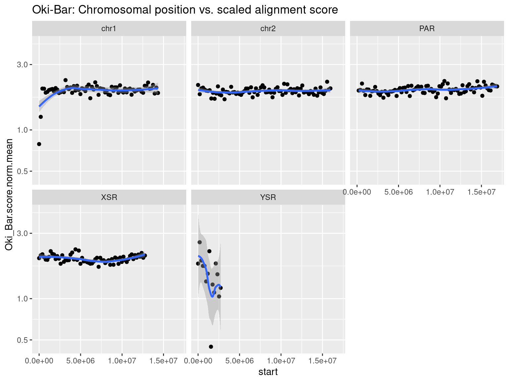
chrw$Oki |>
as.data.frame() |>
subset(select=c("seqnames", "start", "end", "Oki_Osa.score.norm.mean", "Oki_Aom.score.norm.mean", "Oki_Bar.score.norm.mean", "Oki_Nor.score.norm.mean" )) |>
plyranges::filter(seqnames %in% c('chr1', 'chr2', 'PAR', 'XSR')) |>
tidyr::pivot_longer(c("Oki_Osa.score.norm.mean", "Oki_Aom.score.norm.mean", "Oki_Bar.score.norm.mean", "Oki_Nor.score.norm.mean")) |>
ggplot() +
aes(start, value, col = name) +
facet_wrap(~seqnames, nrow = 1) +
geom_smooth(method='loess', formula = y ~ x, span = 0.25, se = FALSE) +
ggtitle("Okinawa: Chromosomal position vs. scaled alignment score")
Alignment categories
The 4 alignment categories we describe can vary between genomic compartments. In this section, I analyse their distributions.
# Okinawa
mcols(chrw$Oki) <- cbind(mcols(chrw$Oki), mcols(grWindows(genome=genomes$Oki, meta=wgo$Oki_Osa, windowSize=windowSize, meta_prefix = 'ac.Oki_Osa.')))
mcols(chrw$Oki) <- cbind(mcols(chrw$Oki), mcols(grWindows(genome=genomes$Oki, meta=wgo$Oki_Bar, windowSize=windowSize, meta_prefix = 'ac.Oki_Bar.')))
mcols(chrw$Oki) <- cbind(mcols(chrw$Oki), mcols(grWindows(genome=genomes$Oki, meta=wgo$Oki_Kum, windowSize=windowSize, meta_prefix = 'ac.Oki_Kum.')))
mcols(chrw$Oki) <- cbind(mcols(chrw$Oki), mcols(grWindows(genome=genomes$Oki, meta=wgo$Oki_Aom, windowSize=windowSize, meta_prefix = 'ac.Oki_Aom.')))
mcols(chrw$Oki) <- cbind(mcols(chrw$Oki), mcols(grWindows(genome=genomes$Oki, meta=wgo$Oki_Nor, windowSize=windowSize, meta_prefix = 'ac.Oki_Nor.')))
chrw$Oki$ac.isolated.mean <- chrw$Oki |> as.data.frame()|> select("ac.Oki_Osa.type.isolated.alignment.count.total", "ac.Oki_Bar.type.isolated.alignment.count.total", "ac.Oki_Kum.type.isolated.alignment.count.total", "ac.Oki_Aom.type.isolated.alignment.count.total", "ac.Oki_Nor.type.isolated.alignment.count.total") |> as.data.frame() |> rowMeans()
chrw$Oki$ac.collinear.mean <- chrw$Oki |> as.data.frame()|> select("ac.Oki_Osa.type.collinear.alignment.count.total", "ac.Oki_Bar.type.collinear.alignment.count.total", "ac.Oki_Kum.type.collinear.alignment.count.total", "ac.Oki_Aom.type.collinear.alignment.count.total", "ac.Oki_Nor.type.collinear.alignment.count.total") |> as.data.frame() |> rowMeans()
chrw$Oki$ac.breakpoint.mean <- chrw$Oki |> as.data.frame() |> select("ac.Oki_Osa.type.breakpoint.region.count.total", "ac.Oki_Bar.type.breakpoint.region.count.total", "ac.Oki_Kum.type.breakpoint.region.count.total", "ac.Oki_Aom.type.breakpoint.region.count.total", "ac.Oki_Nor.type.breakpoint.region.count.total") |> as.data.frame() |> rowMeans()
chrw$Oki$ac.bridge.mean <- chrw$Oki |> as.data.frame()|> select("ac.Oki_Osa.type.bridge.region.count.total", "ac.Oki_Bar.type.bridge.region.count.total", "ac.Oki_Kum.type.bridge.region.count.total", "ac.Oki_Aom.type.bridge.region.count.total", "ac.Oki_Nor.type.bridge.region.count.total") |> as.data.frame() |> rowMeans()
plots$Oki$categories <- list()
plots$Oki$categories$oki_osa_classes <- chrw$Oki |>
as.data.frame() |>
subset(select=c("seqnames", "start", "end", "ac.Oki_Osa.type.isolated.alignment.count.total", "ac.Oki_Osa.type.collinear.alignment.count.total", "ac.Oki_Osa.type.breakpoint.region.count.total", "ac.Oki_Osa.type.bridge.region.count.total" )) |>
plyranges::filter(seqnames %in% c('chr1', 'chr2', 'PAR', 'XSR')) |>
tidyr::pivot_longer(c("ac.Oki_Osa.type.isolated.alignment.count.total", "ac.Oki_Osa.type.collinear.alignment.count.total", "ac.Oki_Osa.type.breakpoint.region.count.total", "ac.Oki_Osa.type.bridge.region.count.total")) |>
ggplot() +
aes(start, value, col = name) +
facet_wrap(~seqnames, nrow = 1) +
geom_smooth(method='loess', formula = y ~ x, span = 0.25, se = FALSE) +
ggtitle("Okinawa-Osaka: Distribution of alignment categories across genome")
plots$Oki$categories$oki_osa_overall <- chrw$Oki |>
as.data.frame() |>
subset(select=c("seqnames", "start", "end", "Arm", "ac.Oki_Osa.type.isolated.alignment.count.total", "ac.Oki_Osa.type.collinear.alignment.count.total", "ac.Oki_Osa.type.breakpoint.region.count.total", "ac.Oki_Osa.type.bridge.region.count.total" )) |>
plyranges::filter(seqnames %in% c('chr1', 'chr2', 'PAR', 'XSR')) |>
tidyr::pivot_longer(c("ac.Oki_Osa.type.isolated.alignment.count.total", "ac.Oki_Osa.type.collinear.alignment.count.total", "ac.Oki_Osa.type.breakpoint.region.count.total", "ac.Oki_Osa.type.bridge.region.count.total")) |>
ggplot() +
aes(value, paste0(seqnames, "_", Arm), fill = name) +
geom_bar(position='fill', stat='identity') +
ylab("chr and arm") +
ggtitle("Okinawa-Osaka: Overall proportion of alignment categories across genome")
plots$Oki$categories$oki_osa_by_chr_position <- chrw$Oki |>
as.data.frame() |>
subset(select=c("seqnames", "start", "end", "Arm", "ac.Oki_Osa.type.isolated.alignment.count.total", "ac.Oki_Osa.type.collinear.alignment.count.total", "ac.Oki_Osa.type.breakpoint.region.count.total", "ac.Oki_Osa.type.bridge.region.count.total" )) |>
plyranges::filter(seqnames %in% c('chr1', 'chr2', 'PAR', 'XSR')) |>
tidyr::pivot_longer(c("ac.Oki_Osa.type.isolated.alignment.count.total", "ac.Oki_Osa.type.collinear.alignment.count.total", "ac.Oki_Osa.type.breakpoint.region.count.total", "ac.Oki_Osa.type.bridge.region.count.total")) |>
ggplot() +
aes(as.factor(start), value, fill = name) +
facet_wrap(~seqnames, nrow = 1, scales='free') +
theme(axis.text.x=element_blank(), axis.ticks.x=element_blank()) +
geom_bar(position='fill', stat='identity') +
xlab("start") +
ggtitle("Okinawa-Osaka: Proportion of alignment categories by position")
# Next, plot the means of ALL populations vs. Oki.
plots$Oki$categories$mean_classes <- chrw$Oki |>
as.data.frame() |>
subset(select=c("seqnames", "start", "end", "Arm", "ac.isolated.mean", "ac.collinear.mean", "ac.breakpoint.mean", "ac.bridge.mean" )) |>
plyranges::filter(seqnames %in% c('chr1', 'chr2', 'PAR', 'XSR')) |>
tidyr::pivot_longer(c("ac.isolated.mean", "ac.collinear.mean", "ac.breakpoint.mean", "ac.bridge.mean")) |>
ggplot() +
aes(start, value, col = name) +
facet_wrap(~seqnames, nrow = 1) +
geom_smooth(method='loess', formula = y ~ x, span = 0.25, se = FALSE) +
ggtitle("Okinawa vs. all: Distribution of alignment categories across genome")
plots$Oki$categories$mean_classes_overall <- chrw$Oki |>
as.data.frame() |>
subset(select=c("seqnames", "start", "end", "Arm", "ac.isolated.mean", "ac.collinear.mean", "ac.breakpoint.mean", "ac.bridge.mean" )) |>
plyranges::filter(seqnames %in% c('chr1', 'chr2', 'PAR', 'XSR')) |>
tidyr::pivot_longer(c("ac.isolated.mean", "ac.collinear.mean", "ac.breakpoint.mean", "ac.bridge.mean")) |>
ggplot() +
aes(value, paste0(seqnames, "_", Arm), fill = name) +
geom_bar(position='fill', stat='identity') +
ylab("chr and arm") +
ggtitle("Okinawa vs. all: Overall proportion of alignment categories across genome")
plots$Oki$categories$mean_classes_by_chr_position <- chrw$Oki |>
as.data.frame() |>
subset(select=c("seqnames", "start", "end", "Arm", "ac.isolated.mean", "ac.collinear.mean", "ac.breakpoint.mean", "ac.bridge.mean" )) |>
plyranges::filter(seqnames %in% c('chr1', 'chr2', 'PAR', 'XSR')) |>
tidyr::pivot_longer(c("ac.isolated.mean", "ac.collinear.mean", "ac.breakpoint.mean", "ac.bridge.mean")) |>
ggplot() +
aes(as.factor(start), value, fill = name) +
facet_wrap(~seqnames, nrow = 1, scales='free') +
theme(axis.text.x=element_blank(), axis.ticks.x=element_blank()) +
geom_bar(position='fill', stat='identity') +
xlab("start") +
ggtitle("Okinawa vs. all: Proportion of alignment categories by position")
lapply(plots$Oki$categories, \(x) x)## $oki_osa_classes##
## $oki_osa_overall##
## $oki_osa_by_chr_position##
## $mean_classes##
## $mean_classes_overall##
## $mean_classes_by_chr_positionExtra Okinawa Oik plots for a presentation
(
(chrw$Oki |>
per_chrom_plot(Y=TRUE) + aes(y=transcripts.tx_name.count) +
ggtitle(paste("Okinawa: transcripts per window (size = ", windowSize/1000, " kbp)", sep=""))) / # plots$Oki$transcripts$density with YSR
(chrw$Oki |>
per_chrom_plot(Y=TRUE) + aes(y=operons.n.count) +
ggtitle(paste("Okinawa: operons per window (size = ", windowSize/1000, " kbp)", sep=""))) / # plots$Oki$operons$density with YSR
(chrw$Oki |>
per_chrom_plot(Y=TRUE) + aes(y=operons.n.mean) +
ggtitle(paste("Okinawa: mean operon size per window (size = ", windowSize/1000, " kbp)", sep=""))) / # Ditto
plots$Oki$repeats$density /
plots$Oki$scores$oki_osa /
plots$Oki$widths$widths
) + plot_layout(guides = 'collect')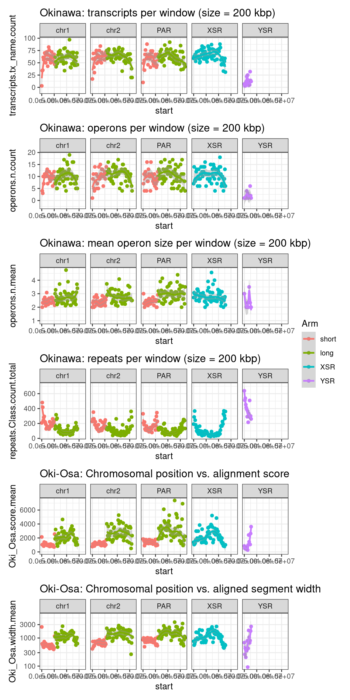
Session information
## R version 4.1.2 (2021-11-01)
## Platform: x86_64-pc-linux-gnu (64-bit)
## Running under: Debian GNU/Linux bookworm/sid
##
## Matrix products: default
## BLAS: /usr/lib/x86_64-linux-gnu/blas/libblas.so.3.10.0
## LAPACK: /usr/lib/x86_64-linux-gnu/lapack/liblapack.so.3.10.0
##
## locale:
## [1] LC_CTYPE=en_US.UTF-8 LC_NUMERIC=C
## [3] LC_TIME=en_US.UTF-8 LC_COLLATE=en_US.UTF-8
## [5] LC_MONETARY=en_US.UTF-8 LC_MESSAGES=en_US.UTF-8
## [7] LC_PAPER=en_US.UTF-8 LC_NAME=C
## [9] LC_ADDRESS=C LC_TELEPHONE=C
## [11] LC_MEASUREMENT=en_US.UTF-8 LC_IDENTIFICATION=C
##
## attached base packages:
## [1] stats4 stats graphics grDevices utils datasets methods
## [8] base
##
## other attached packages:
## [1] ggpubr_0.4.0
## [2] BSgenome.Oidioi.genoscope.OdB3_1.0.0
## [3] BSgenome.Oidioi.OIST.AOM.5.5f_1.0.1
## [4] BSgenome.Oidioi.OIST.KUM.M3.7f_1.0.1
## [5] BSgenome.Oidioi.OIST.Bar2.p4_1.0.1
## [6] BSgenome.Oidioi.OIST.OSKA2016v1.9_1.0.0
## [7] BSgenome.Oidioi.OIST.OKI2018.I69_1.0.1
## [8] patchwork_1.1.1
## [9] plyranges_1.14.0
## [10] dplyr_1.0.8
## [11] viridis_0.6.2
## [12] viridisLite_0.4.0
## [13] GenomicFeatures_1.46.5
## [14] AnnotationDbi_1.56.2
## [15] Biobase_2.54.0
## [16] OikScrambling_4.1.0
## [17] ggplot2_3.3.5
## [18] GenomicBreaks_0.13.1
## [19] BSgenome_1.62.0
## [20] rtracklayer_1.54.0
## [21] Biostrings_2.62.0
## [22] XVector_0.34.0
## [23] GenomicRanges_1.46.1
## [24] GenomeInfoDb_1.30.1
## [25] IRanges_2.28.0
## [26] S4Vectors_0.32.3
## [27] BiocGenerics_0.40.0
##
## loaded via a namespace (and not attached):
## [1] utf8_1.2.2 R.utils_2.11.0
## [3] tidyselect_1.1.2 lme4_1.1-28
## [5] poweRlaw_0.70.6 RSQLite_2.2.10
## [7] htmlwidgets_1.5.4 grid_4.1.2
## [9] BiocParallel_1.28.3 munsell_0.5.0
## [11] codetools_0.2-18 ragg_1.2.1
## [13] withr_2.5.0 colorspace_2.0-3
## [15] filelock_1.0.2 highr_0.9
## [17] knitr_1.37 rstudioapi_0.13
## [19] ggsignif_0.6.3 genoPlotR_0.8.11
## [21] MatrixGenerics_1.6.0 labeling_0.4.2
## [23] GenomeInfoDbData_1.2.7 farver_2.1.0
## [25] bit64_4.0.5 rprojroot_2.0.2
## [27] vctrs_0.3.8 generics_0.1.2
## [29] xfun_0.30 BiocFileCache_2.2.1
## [31] R6_2.5.1 locfit_1.5-9.5
## [33] heatmaps_1.18.0 bitops_1.0-7
## [35] cachem_1.0.6 DelayedArray_0.20.0
## [37] assertthat_0.2.1 BiocIO_1.4.0
## [39] scales_1.1.1 nnet_7.3-16
## [41] gtable_0.3.0 weights_1.0.4
## [43] rlang_1.0.2 systemfonts_1.0.3
## [45] splines_4.1.2 rstatix_0.7.0
## [47] broom_0.7.12 checkmate_2.0.0
## [49] yaml_2.3.5 reshape2_1.4.4
## [51] abind_1.4-5 backports_1.4.1
## [53] Hmisc_4.6-0 tools_4.1.2
## [55] ellipsis_0.3.2 jquerylib_0.1.4
## [57] RColorBrewer_1.1-2 Rcpp_1.0.8.3
## [59] plyr_1.8.6 base64enc_0.1-3
## [61] progress_1.2.2 zlibbioc_1.40.0
## [63] purrr_0.3.4 RCurl_1.98-1.6
## [65] prettyunits_1.1.1 rpart_4.1-15
## [67] SummarizedExperiment_1.24.0 cluster_2.1.2
## [69] fs_1.5.2 magrittr_2.0.2
## [71] data.table_1.14.2 matrixStats_0.61.0
## [73] hms_1.1.1 fftwtools_0.9-11
## [75] evaluate_0.15 xtable_1.8-4
## [77] XML_3.99-0.9 jpeg_0.1-9
## [79] gridExtra_2.3 compiler_4.1.2
## [81] biomaRt_2.50.3 tibble_3.1.6
## [83] mice_3.14.0 KernSmooth_2.23-20
## [85] crayon_1.5.0 minqa_1.2.4
## [87] R.oo_1.24.0 htmltools_0.5.2
## [89] mgcv_1.8-38 tzdb_0.2.0
## [91] tiff_0.1-11 Formula_1.2-4
## [93] tidyr_1.2.0 DBI_1.1.2
## [95] dbplyr_2.1.1 MASS_7.3-54
## [97] rappdirs_0.3.3 boot_1.3-28
## [99] car_3.0-13 Matrix_1.4-0
## [101] ade4_1.7-18 readr_2.1.2
## [103] cli_3.2.0 R.methodsS3_1.8.1
## [105] gdata_2.18.0 parallel_4.1.2
## [107] pkgconfig_2.0.3 pkgdown_2.0.2
## [109] GenomicAlignments_1.30.0 foreign_0.8-81
## [111] xml2_1.3.3 annotate_1.72.0
## [113] bslib_0.3.1 stringr_1.4.0
## [115] digest_0.6.29 pracma_2.3.8
## [117] CNEr_1.30.0 rmarkdown_2.11
## [119] htmlTable_2.4.0 restfulr_0.0.13
## [121] curl_4.3.2 EBImage_4.36.0
## [123] Rsamtools_2.10.0 gtools_3.9.2
## [125] rjson_0.2.21 nloptr_1.2.2.3
## [127] lifecycle_1.0.1 nlme_3.1-153
## [129] jsonlite_1.8.0 carData_3.0-5
## [131] desc_1.4.1 fansi_1.0.2
## [133] pillar_1.7.0 lattice_0.20-45
## [135] KEGGREST_1.34.0 fastmap_1.1.0
## [137] httr_1.4.2 plotrix_3.8-2
## [139] survival_3.2-13 GO.db_3.14.0
## [141] glue_1.6.2 png_0.1-7
## [143] bit_4.0.4 stringi_1.7.6
## [145] sass_0.4.0 blob_1.2.2
## [147] textshaping_0.3.6 latticeExtra_0.6-29
## [149] memoise_2.0.1